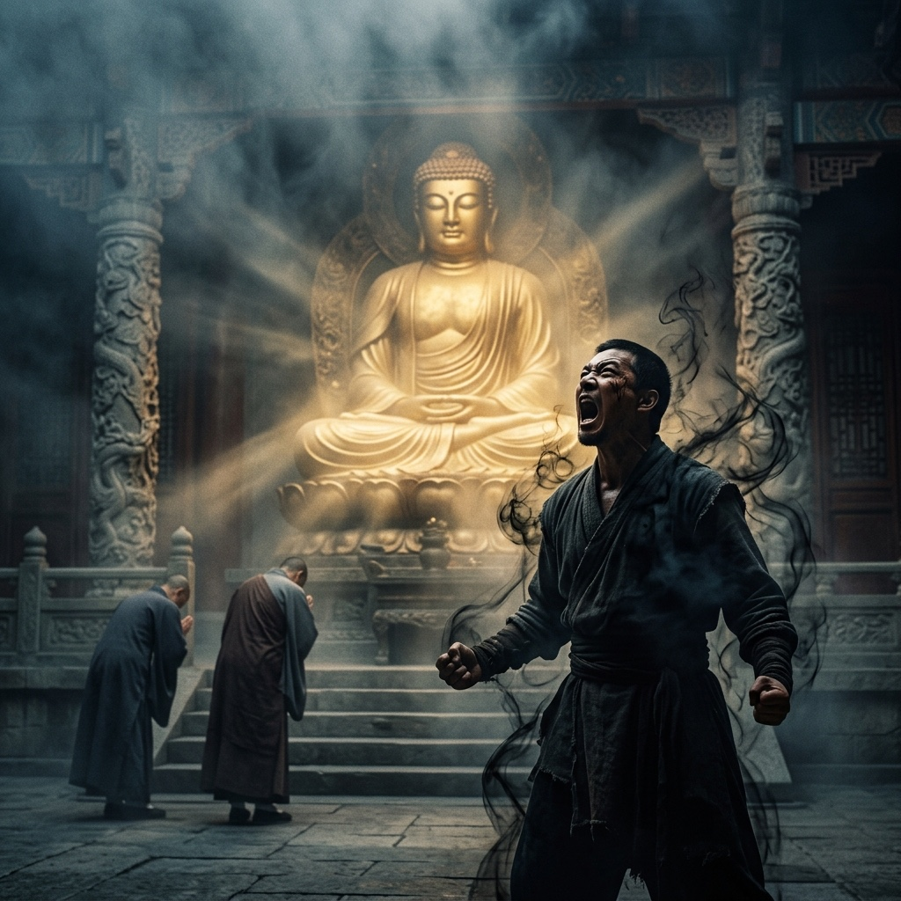
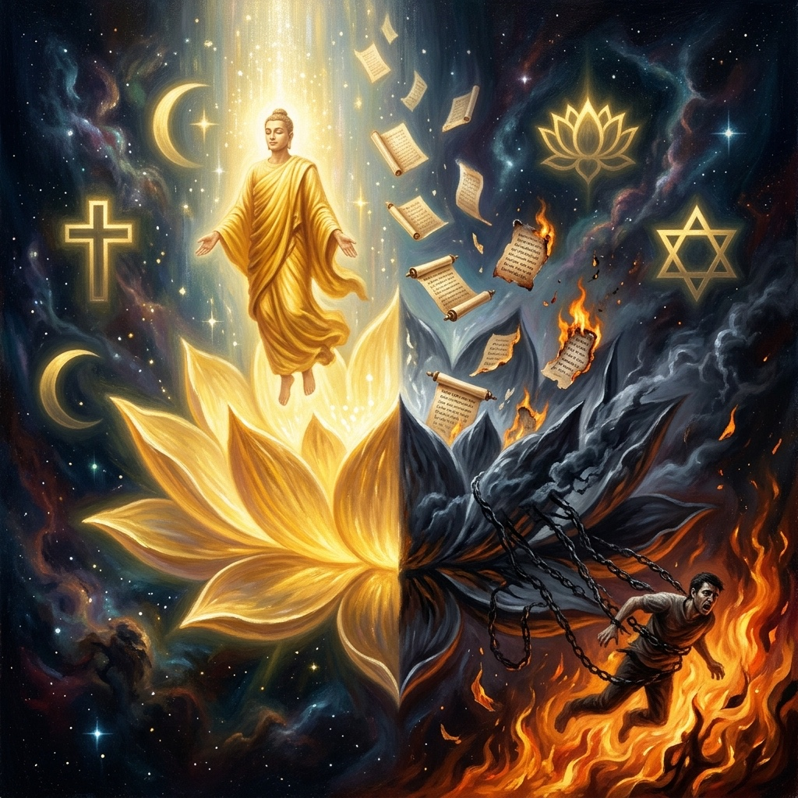
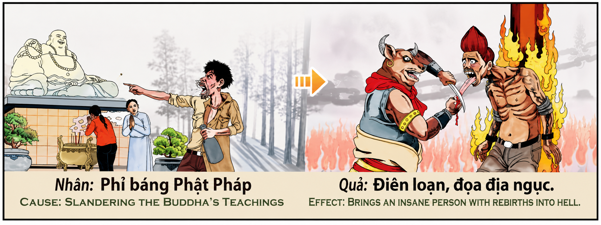

La Difamación SagradaThe Sacred DefamationLa Diffamazione Sacra神圣的诽谤التجديف المقدسСвященная КлеветаDie Heilige VerleumdungLa Diffamation Sacrée神聖な誹謗A Difamação SagradaSự Phỉ Báng Thiêng Liêng
"Existe una diferencia infinita entre quien señala las sombras de una tradición sagrada para iluminarla y quien lanza piedras contra su luz para apagarla. El primero actúa como el viento que limpia el templo; el segundo, como el incendio que lo consume. El karma no castiga la inteligencia crítica que sirve a la verdad: castiga el veneno del corazón que, disfrazado de argumento, tiene como único objetivo destruir la fe que otros han construido con lágrimas y años de búsqueda sincera.""There is an infinite difference between the one who points to the shadows of a sacred tradition to illuminate it and the one who hurls stones at its light to extinguish it. The first acts like the wind that cleanses the temple; the second, like the fire that consumes it. Karma does not punish the critical intelligence that serves truth: it punishes the poison of the heart that, disguised as argument, has as its sole objective to destroy the faith that others have built with tears and years of sincere seeking.""Esiste una differenza infinita tra chi indica le ombre di una tradizione sacra per illuminarla e chi scaglia pietre contro la sua luce per spegnerla. Il primo agisce come il vento che purifica il tempio; il secondo, come il fuoco che lo consuma. Il karma non punisce l'intelligenza critica che serve la verità: punisce il veleno del cuore che, mascherato da argomento, ha come unico obiettivo distruggere la fede che gli altri hanno costruito con lacrime e anni di ricerca sincera.""在那些指出神圣传统之阴影以照亮它的人，与那些向它的光芒投掷石块以将其熄灭的人之间，存在着无限的差异。前者如同净化庙宇的风；后者，则如同吞噬庙宇的烈火。业力不惩罚服务于真理的批判性智慧：它惩罚那个伪装成论据的心灵之毒，其唯一目的是摧毁他人用泪水和多年真诚寻求而建立的信仰。""هناك فرق لا نهاية له بين من يشير إلى ظلال تقليد مقدس ليضيئه ومن يقذف الحجارة على نوره ليطفئه. الأول يتصرف كالريح التي تطهر المعبد؛ والثاني، كالنار التي تستهلكه. الكارما لا تعاقب الذكاء النقدي الذي يخدم الحقيقة: بل تعاقب سم القلب الذي، متنكراً في هيئة حجة، يهدف بشكل حصري إلى تدمير الإيمان الذي بناه الآخرون بالدموع وسنوات من البحث الصادق."«Существует бесконечное различие между тем, кто указывает на тени священной традиции, чтобы осветить её, и тем, кто бросает камни в её свет, чтобы погасить его. Первый действует как ветер, очищающий храм; второй — как огонь, поглощающий его. Карма не наказывает критический ум, служащий истине: она наказывает яд сердца, который, маскируясь под аргумент, преследует единственную цель — разрушить веру, которую другие выстроили со слезами и годами искреннего поиска.»„Es gibt einen unendlichen Unterschied zwischen demjenigen, der auf die Schatten einer heiligen Tradition zeigt, um sie zu beleuchten, und demjenigen, der Steine gegen ihr Licht wirft, um es auszulöschen. Der Erste handelt wie der Wind, der den Tempel reinigt; der Zweite, wie das Feuer, das ihn verzehrt. Karma bestraft nicht die kritische Intelligenz, die der Wahrheit dient: Es bestraft das Gift des Herzens, das, als Argument verkleidet, einzig das Ziel verfolgt, den Glauben zu zerstören, den andere mit Tränen und Jahren aufrichtiger Suche aufgebaut haben."«Il existe une différence infinie entre celui qui pointe les ombres d'une tradition sacrée pour l'éclairer et celui qui lance des pierres contre sa lumière pour l'éteindre. Le premier agit comme le vent qui purifie le temple ; le second, comme le feu qui le consume. Le karma ne punit pas l'intelligence critique qui sert la vérité : il punit le poison du cœur qui, déguisé en argument, n'a pour seul objectif que de détruire la foi que les autres ont construite avec des larmes et des années de recherche sincère.»「神聖な伝統の影を指し示してそれを照らす者と、その光に石を投げつけてそれを消そうとする者との間には、無限の差異がある。前者は神殿を清める風のように行動する。後者は、それを焼き尽くす炎のように。カルマは真実に奉仕する批判的知性を罰しない。カルマが罰するのは、議論に偽装しながら、他者が涙と誠実な探求の年月を重ねて築き上げた信仰を破壊することだけを目的とする、心の毒だ。」«Existe uma diferença infinita entre quem aponta as sombras de uma tradição sagrada para a iluminar e quem lança pedras contra a sua luz para a apagar. O primeiro age como o vento que purifica o templo; o segundo, como o fogo que o consome. O karma não pune a inteligência crítica que serve a verdade: pune o veneno do coração que, disfarçado de argumento, tem como único objetivo destruir a fé que os outros construíram com lágrimas e anos de busca sincera.»"Có một sự khác biệt vô tận giữa người chỉ ra những bóng tối của một truyền thống thiêng liêng để soi sáng nó và người ném đá vào ánh sáng của nó để dập tắt nó. Người đầu tiên hành động như ngọn gió thanh lọc ngôi đền; người thứ hai, như ngọn lửa thiêu rụi nó. Nghiệp quả không trừng phạt trí tuệ phê bình phụng sự chân lý: nó trừng phạt chất độc của trái tim mà, cải trang thành lập luận, chỉ có một mục tiêu duy nhất là phá hủy đức tin mà người khác đã xây dựng bằng nước mắt và nhiều năm tìm kiếm chân thành."
El antiguo pasaje kármico nos muestra una escena de desoladora familiaridad: un hombre furioso señala con el dedo a una estatua del Buda que preside serena un altar de incienso y flores, mientras dos mujeres devotas oran con manos juntas y cabeza inclinada. El hombre grita, gesticula, denigra. Y en la imagen del efecto, ese mismo hombre aparece reducido a un esqueleto viviente, atado y sumido en llamas, mientras un ser demoníaco de cabeza de toro lo arrastra sin misericordia. La causa: difamar las enseñanzas del Buda. El efecto: la locura, el sufrimiento y el renacimiento en el infierno.
Antes de que cualquiera rechace esta imagen como superstición o como fanatismo religioso, es necesario detenerse a comprender qué significa verdaderamente «difamar las enseñanzas de un maestro iluminado» desde la perspectiva del karma universal, y no desde el prisma estrecho de la defensa sectaria. Porque la ley kármica que aquí se describe no es una norma eclesiástica que proteja a una institución: es una ley cósmica que actúa sobre la energía del alma humana. Y su comprensión profunda requiere que hagamos una distinción que pocos textos espirituales se atreven a articular con la nitidez necesaria: la diferencia abismal entre difamar y aportar.
La primera dimensión es el principio de la soberbia disfrazada de crítica. Existe un tipo de crítica religiosa que, en apariencia, busca la verdad, pero que en su raíz está animada por el orgullo, la rivalidad o el deseo de humillar. Este es el territorio del difamador kármico. El hombre de la imagen no señala al Buda para encontrar la verdad: señala para proclamar su propia superioridad, para ridiculizar la fe ajena, para destruir la paz interior de quienes oran. Su gesto no es el del filósofo que cuestiona: es el del agresor que ataca. Y aquí radica la clave kármica: no es lo que se dice, sino por qué se dice y para qué se dice. La misma observación intelectual — «esta doctrina tiene contradicciones» — puede ser un acto de amor si se pronuncia con humildad y con el deseo sincero de acercarse más a la verdad, o puede ser un acto de guerra espiritual si se pronuncia con arrogancia y con la intención de herir. El karma no juzga las palabras; juzga la intención que las habita.
La segunda dimensión nos lleva al corazón del dilema que muchos seres humanos de fe genuina, nacidos en las más diversas tradiciones espirituales, han planteado con honestidad admirable a lo largo de los siglos: ¿cuándo termina la contribución legítima y cuándo comienza la difamación? Este es, quizás, el territorio kármico más delicado de toda la ética espiritual. Y la respuesta no es simple, pero sí es precisa: la contribución sirve a la luz; la difamación sirve al ego. Cuando alguien reflexiona sobre los dogmas de su tradición y dice: «encuentro difícil aceptar el exclusivismo religioso», o «veo en la afirmación de que un solo maestro es el único hijo de Dios un posible pecado de soberbia colectiva», está ejerciendo exactamente lo que el karma considera una actividad espiritual noble y legítima. No porque tenga razón necesariamente, sino porque el motivo de esa reflexión es sincero, está orientado a la verdad, y tiene como norte la comprensión más profunda de lo divino. Esta actitud no genera karma negativo: genera karma de búsqueda honesta, que es uno de los más luminosos. El karma distingue, con una precisión que ninguna institución humana puede igualar, entre la mente que duda para crecer y la mente que ataca para destruir.
La tercera dimensión es la más universal y la más desafiante para el pensamiento contemporáneo: el karma de la soberbia colectiva en nombre de lo sagrado. Si bien el difamador individual que insulta a un maestro iluminado genera karma negativo personal, existe un karma colectivo aún más denso que se genera cuando una institución religiosa proclama que «sólo nosotros tenemos la verdad completa, y todos los demás están en el error». Esta afirmación — pronunciada desde el papado medieval, desde los consejos islámicos de algunas épocas, desde ciertos rabinatos, desde algunos monasterios budistas — es, desde la perspectiva del karma universal, una forma de difamación colectiva de la divinidad misma. Porque la divinidad, en su naturaleza esencial, no se agota en ninguna forma particular. Jesucristo, Gautama Buda, Muhammad, Moisés, Krishna — todos son, desde la perspectiva perenne que el karma refleja, rayos distintos de una misma luz cósmica. Afirmar que sólo uno de esos rayos es «el verdadero» no sólo es kármicamente arrogante: es metafísicamente imposible, pues ningún rayo puede ser «más sol» que otro rayo del mismo sol. Quien cuestiona el exclusivismo de su propia tradición no está difamando al maestro: está honrando su grandeza cósmica al negarse a reducirlo a una marca registrada de una sola institución humana.
La cuarta dimensión cierra el círculo con la imagen más poderosa del efecto kármico: la locura como consecuencia de difamar la sabiduría sagrada. El hombre que aparece en el infierno de la imagen no está allí porque haya cometido un crimen convencional. Está allí porque ha atacado algo que trasciende infinitamente los límites de su comprensión. La sabiduría de un maestro iluminado — sea Buda, Jesús, Moisés o cualquier otro — es una condensación del tejido mismo de la realidad cósmica, destilada en palabras y vida humana para que la humanidad pueda encontrar su camino hacia la liberación. Atacar esa sabiduría no daña al maestro: el maestro ya está en la luz y es inaccesible al daño. Pero sí daña al atacante de una manera muy específica: desconecta su mente de las frecuencias más elevadas de la conciencia, induciéndole paulatinamente a una forma de oscuridad interior que los textos kármicos llaman «locura espiritual». No es necesariamente la locura clínica: puede ser la incapacidad de encontrar paz, la incapacidad de confiar, la incapacidad de amar, la incapacidad de descubrir el propósito de la propia vida. El infierno de la imagen no es un lugar geográfico: es el estado interior de quien ha roto su conexión con lo sagrado a través del odio activo.
The ancient karmic passage shows us a scene of desolating familiarity: a furious man points his finger at a Buddha statue that serenely presides over an altar of incense and flowers, while two devout women pray with joined hands and bowed heads. The man shouts, gesticulates, denigrates. And in the image of the effect, that same man appears reduced to a living skeleton, bound and engulfed in flames, while a demonic bull-headed being drags him without mercy. The cause: slandering the teachings of the Buddha. The effect: madness, suffering, and rebirth in hell.
Before anyone rejects this image as superstition or religious fanaticism, it is necessary to pause and understand what it truly means to "slander the teachings of an enlightened master" from the perspective of universal karma, and not from the narrow prism of sectarian defense. Because the karmic law described here is not an ecclesiastical rule protecting an institution: it is a cosmic law acting upon the energy of the human soul. And its deep understanding requires that we make a distinction that few spiritual texts dare to articulate with the necessary clarity: the abysmal difference between defaming and contributing.
The first dimension is the principle of pride disguised as criticism. There exists a type of religious criticism that, in appearance, seeks truth, but that at its root is driven by pride, rivalry, or the desire to humiliate. This is the territory of the karmic slanderer. The man in the image does not point at the Buddha to find truth: he points to proclaim his own superiority, to ridicule others' faith, to destroy the inner peace of those who pray. His gesture is not that of a philosopher who questions: it is that of an aggressor who attacks. And herein lies the karmic key: it is not what is said, but why it is said and to what end it is said. The same intellectual observation — "this doctrine has contradictions" — can be an act of love if pronounced with humility and with the sincere desire to approach truth more closely, or it can be an act of spiritual warfare if pronounced with arrogance and with the intention to wound. Karma does not judge words; it judges the intention that inhabits them.
The second dimension takes us to the heart of the dilemma that many human beings of genuine faith — born into the most diverse spiritual traditions — have posed with admirable honesty across the centuries: where does legitimate contribution end and where does defamation begin? This is, perhaps, the most delicate karmic territory in all of spiritual ethics. And the answer is not simple, but it is precise: contribution serves the light; defamation serves the ego. When someone reflects on the dogmas of their Church and says: "I find it difficult to accept religious exclusivism," or "I see in the claim that Jesus is the only Son of God a possible sin of collective pride," they are exercising exactly what karma considers a noble and legitimate spiritual activity. Not necessarily because they are right, but because the motive of that reflection is sincere, oriented toward truth, and has as its north a deeper understanding of the divine. This attitude does not generate negative karma: it generates karma of honest seeking, which is among the most luminous. Karma distinguishes, with a precision no human institution can match, between the mind that doubts in order to grow and the mind that attacks in order to destroy.
The third dimension is the most universal and the most challenging for contemporary thought: the karma of collective pride in the name of the sacred. While the individual slanderer who insults an enlightened master generates personal negative karma, there exists an even denser collective karma that is generated when a religious institution proclaims that "only we possess the complete truth, and all others are in error." This assertion — pronounced from the medieval papacy, from the Islamic councils of certain eras, from certain rabbinates, from some Buddhist monasteries — is, from the perspective of universal karma, a form of collective defamation of the divinity itself. Because divinity, in its essential nature, is not exhausted in any particular form. Jesus Christ, Gautama Buddha, Muhammad, Moses, Krishna — all are, from the perennial perspective that karma reflects, distinct rays of the same cosmic light. To claim that only one of those rays is "the true one" is not only karmically arrogant: it is metaphysically impossible, for no ray can be "more sun" than another ray from the same sun. The one who questions the exclusivism of their own tradition is not defaming Jesus: they are honoring the cosmic greatness of Jesus Christ by refusing to reduce him to a registered trademark of a single human institution.
The fourth dimension closes the circle with the most powerful image of karmic effect: madness as the consequence of defaming sacred wisdom. The man appearing in the hell of the image is not there because he committed a conventional crime. He is there because he attacked something that transcends infinitely the limits of his understanding. The wisdom of an enlightened master — be it Buddha, Jesus, Moses or any other — is a condensation of the very fabric of cosmic reality, distilled into words and human life so that humanity can find its way to liberation. Attacking that wisdom does not harm the master: the master is already in the light and is inaccessible to harm. But it does harm the attacker in a very specific way: it disconnects their mind from the highest frequencies of consciousness, gradually inducing a form of inner darkness that karmic texts call "spiritual madness." It is not necessarily clinical madness: it may be the inability to find peace, the inability to trust, the inability to love, the inability to discover the purpose of one's own life. The hell in the image is not a geographical place: it is the interior state of one who has broken their connection with the sacred through active hatred.
Il antico passaggio karmico ci mostra una scena di desolante familiarità: un uomo furioso indica con il dito una statua del Buddha che presiede serenamente un altare di incenso e fiori, mentre due donne devote pregano con le mani giunte e la testa china. L'uomo urla, gesticola, denigra. E nell'immagine dell'effetto, quell'uomo appare ridotto a uno scheletro vivente, legato e avvolto dalle fiamme, mentre un essere demoniaco dalla testa di toro lo trascina senza pietà. La causa: diffamare gli insegnamenti del Buddha. L'effetto: la follia, la sofferenza e la rinascita nell'inferno.
Prima che qualcuno respinga questa immagine come superstizione o fanatismo religioso, è necessario fermarsi a capire cosa significhi veramente «diffamare gli insegnamenti di un maestro illuminato» dalla prospettiva del karma universale, e non dal prisma ristretto della difesa settaria. Perché la legge karmica qui descritta non è una norma ecclesiastica che protegge un'istituzione: è una legge cosmica che agisce sull'energia dell'anima umana. E la sua comprensione profonda richiede che facciamo una distinzione che pochi testi spirituali osano articolare con la necessaria chiarezza: la differenza abissale tra diffamare e contribuire.
La prima dimensione è il principio della superbia mascherata da critica. Esiste un tipo di critica religiosa che, in apparenza, cerca la verità, ma che alla radice è animata dall'orgoglio, dalla rivalità o dal desiderio di umiliare. Questo è il territorio del diffamatore karmico. L'uomo dell'immagine non indica il Buddha per trovare la verità: indica per proclamare la propria superiorità, per ridicolizzare la fede altrui, per distruggere la pace interiore di chi prega. Il suo gesto non è quello del filosofo che interroga: è quello dell'aggressore che attacca. E qui risiede la chiave karmica: non è quello che si dice, ma perché lo si dice e per quale scopo lo si dice. La stessa osservazione intellettuale — «questa dottrina ha contraddizioni» — può essere un atto d'amore se pronunciata con umiltà e con il desiderio sincero di avvicinarsi di più alla verità, oppure può essere un atto di guerra spirituale se pronunciata con arroganza e con l'intenzione di ferire. Il karma non giudica le parole; giudica l'intenzione che le abita.
La seconda dimensione ci porta al cuore del dilemma che molti esseri umani di fede genuina, nati nelle tradizioni spirituali più diverse, hanno posto con ammirevole onestà nel corso dei secoli: dove finisce il contributo legittimo e dove inizia la diffamazione? Questo è, forse, il territorio karmico più delicato di tutta l'etica spirituale. E la risposta non è semplice, ma è precisa: il contributo serve la luce; la diffamazione serve l'ego. Quando qualcuno riflette sui dogmi della propria Chiesa e dice: «fatico ad accettare l'esclusivismo religioso», oppure «vedo nell'affermazione che Gesù è il solo Figlio di Dio un possibile peccato di superbia collettiva», sta esercitando esattamente ciò che il karma considera un'attività spirituale nobile e legittima. Non necessariamente perché abbia ragione, ma perché il motivo di tale riflessione è sincero, orientato verso la verità e ha come riferimento una comprensione più profonda del divino. Questo atteggiamento non genera karma negativo: genera karma di ricerca onesta, che è tra i più luminosi. Il karma distingue, con una precisione che nessuna istituzione umana può eguagliare, tra la mente che dubita per crescere e la mente che attacca per distruggere.
La terza dimensione è la più universale e la più sfidante per il pensiero contemporaneo: il karma della superbia collettiva in nome del sacro. Mentre il singolo diffamatore che insulta un maestro illuminato genera karma negativo personale, esiste un karma collettivo ancora più denso che si genera quando un'istituzione religiosa proclama che «solo noi possediamo la verità completa, e tutti gli altri sono nell'errore». Questa affermazione — pronunciata dal papato medievale, dai consigli islamici di certe epoche, da certi rabbinati, da alcuni monasteri buddhisti — è, dalla prospettiva del karma universale, una forma di diffamazione collettiva della divinità stessa. Perché la divinità, nella sua natura essenziale, non si esaurisce in nessuna forma particolare. Gesù Cristo, Gautama Buddha, Maometto, Mosè, Krishna — tutti sono, dalla prospettiva perenne che il karma riflette, raggi distinti di un'unica luce cosmica. Affermare che solo uno di quei raggi sia «quello vero» non è solo karmicamente arrogante: è metafisicamente impossibile, poiché nessun raggio può essere «più sole» di un altro raggio dello stesso sole. Chi mette in discussione l'esclusivismo della propria tradizione non sta diffamando Gesù: sta onorando la grandezza cosmica di Gesù Cristo rifiutando di ridurlo a un marchio registrato di una singola istituzione umana.
La quarta dimensione chiude il cerchio con l'immagine più potente dell'effetto karmico: la follia come conseguenza della diffamazione della saggezza sacra. L'uomo che appare nell'inferno dell'immagine non si trova lì perché abbia commesso un crimine convenzionale. Si trova lì perché ha attaccato qualcosa che trascende infinitamente i limiti della sua comprensione. La saggezza di un maestro illuminato — sia esso il Buddha, Gesù, Mosè o qualsiasi altro — è una condensazione del tessuto stesso della realtà cosmica, distillata in parole e vita umana affinché l'umanità possa trovare la propria via verso la liberazione. Attaccare quella saggezza non nuoce al maestro: il maestro è già nella luce ed è inaccessibile al danno. Ma nuoce all'aggressore in un modo molto specifico: disconnette la sua mente dalle frequenze più elevate della coscienza, inducendolo gradualmente a una forma di oscurità interiore che i testi karmici chiamano «follia spirituale». Non è necessariamente la follia clinica: può essere l'incapacità di trovare pace, l'incapacità di fidarsi, l'incapacità di amare, l'incapacità di scoprire lo scopo della propria vita. L'inferno dell'immagine non è un luogo geografico: è lo stato interiore di chi ha spezzato il proprio legame con il sacro attraverso l'odio attivo.
古老的业力图像向我们展示了一幅令人心痛的熟悉场景：一个愤怒的男子用手指指着一尊佛像，而佛像宁静地主持着一个香火与鲜花的祭坛，与此同时，两名虔诚的女性合掌低头祈祷。那男子大声咒骂、手舞足蹈、恶言诋毁。而在业力果报的图像中，同一个男子变成了一具活骷髅，被捆绑在火焰之中，一头牛头妖魔冷酷无情地拖着他。原因：诽谤佛陀的教义。结果：疯狂、痛苦与地狱轮回。
在读者将这幅图像斥为迷信或宗教狂热主义之前，有必要停下来思考，从普世业力的角度——而非狭隘的宗派防御棱镜——来理解"诽谤开悟大师的教义"的真实含义。因为这里所描述的业力法则并非保护某一机构的教会规范：它是作用于人类灵魂能量的宇宙法则。对它的深刻理解要求我们做出一个区分，而这个区分很少有精神文本敢于以必要的清晰度加以阐明：诽谤与贡献之间的天壤之别。
第一个维度是伪装成批评的傲慢原则。存在一种宗教批评，表面上寻求真理，但其根源却受到傲慢、竞争或羞辱欲望的驱动。这是业力诽谤者的领地。图像中的男子并非为了寻找真理而指向佛陀：他指向佛陀是为了宣扬自己的优越感，嘲弄他人的信仰，摧毁祈祷者的内心平静。他的举止不是哲学家质疑者的姿态：而是攻击者的动作。业力关键就在这里：不是说了什么，而是为什么说，以及为了什么目的说。同样的理性观察——"这种教义有矛盾"——如果以谦逊的态度、带着真诚接近真理的愿望说出，可以是一种爱的行为；如果以傲慢的态度、带着伤害他人的意图说出，则可以是一种精神战争的行为。业力不评判言辞；它评判言辞背后的意图。
第二个维度将我们带到了一个问题的核心——许多真诚信仰的人类，诞生在最多样化的精神传统之中，数千年来以令人钦佩的诚实提出的问题：合法的贡献在哪里结束，诽谤从哪里开始？这或许是整个精神伦理学中最微妙的业力领域。答案并不简单，但却是精确的：贡献服务于光；诽谤服务于自我。当有人反思自己教会的教条并说："我觉得难以接受宗教排他主义"，或者"我在'耶稣是上帝独生子'这一声称中看到了一种可能的集体傲慢之罪"，这恰恰是业力所认为的高尚且正当的精神活动。不一定是因为他们是对的，而是因为这种反思的动机是真诚的，以真理为导向，以对神圣更深的理解为目标。这种态度不会产生负面业力：它产生诚实探寻的业力，这是最光明的业力之一。业力以任何人类机构都无法企及的精确度，区分着那些为了成长而怀疑的心灵和那些为了摧毁而攻击的心灵。
第三个维度是对当代思想最普遍、最具挑战性的：以神圣之名的集体傲慢之业。尽管侮辱开悟大师的个人诽谤者会产生个人负面业力，但当一个宗教机构宣称"只有我们拥有完整的真理，而其他所有人都错了"时，会产生更为深重的集体业力。这一断言——由中世纪教皇、某些时代的伊斯兰议会、某些犹太法庭、某些佛教寺院所宣称——从普世业力的角度来看，是对神性本身的一种集体诽谤。因为神性，就其本质而言，不会在任何特定形式中耗尽。耶稣基督、乔达摩·佛陀、穆罕默德、摩西、克里希纳——从业力所反映的永恒视角来看，他们都是同一宇宙之光的不同光线。声称其中只有一道光是"真正的"不仅在业力上是傲慢的：在形而上学上也是不可能的，因为没有任何一道光线能比同一太阳的另一道光线"更像太阳"。质疑自身传统排他主义的人并非在诽谤耶稣：他们是在拒绝将耶稣基督缩减为某一单一人类机构的注册商标，从而彰显了耶稣基督的宇宙伟大。
第四个维度以业力效果最有力的图像收尾：诽谤神圣智慧的后果——疯狂。图像中出现在地狱里的那个人，并不是因为犯了常规罪行而在那里。他在那里，是因为他攻击了一个无限超越他理解力的东西。一位开悟大师的智慧——无论是佛陀、耶稣、摩西还是其他任何人——是宇宙现实本身的精华，被提炼为言语和人类生活，让人类能够找到通往解脱的道路。攻击那种智慧并不会伤害大师：大师已经在光明中，不受伤害。但它确实以非常具体的方式伤害了攻击者：它使其心灵与最高频率的意识断开连接，逐渐将其引入业力文本称为"精神疯狂"的内在黑暗之中。这不一定是临床意义上的疯狂：它可能是无法找到平静，无法信任，无法爱，无法发现自己人生意义的无能。图像中的地狱不是一个地理位置：它是那些通过积极的仇恨而切断了与神圣的联系的人的内在状态。
يظهر لنا المشهد الكارمي القديم صورة مألوفة مؤلمة: رجل غاضب يشير بأصبعه إلى تمثال للبوذا يترأس بهدوء مذبحاً من البخور والزهور، بينما تصلي امرأتان متقيتان بيدين متشابكتين ورأسين منحنيين. الرجل يصرخ ويلوح بيديه ويهجو. وفي صورة الأثر، يبدو هذا الرجل بعينه قد تحول إلى هيكل عظمي حي، مقيد ومغمور بالنيران، بينما يجره كائن شيطاني برأس ثور دون رحمة. السبب: الطعن في تعاليم البوذا. الأثر: الجنون، والمعاناة، والولادة من جديد في الجحيم.
قبل أن يرفض القارئ هذه الصورة باعتبارها خرافةً أو تعصباً دينياً، لا بد من التوقف لفهم ما يعنيه حقاً «الطعن في تعاليم أستاذ مستنير» من منظور الكارما الكونية، لا من المنظور الضيق للدفاع الطائفي. لأن القانون الكارمي الموصوف هنا ليس حكماً كنسياً يحمي مؤسسة: إنه قانون كوني يعمل على طاقة الروح الإنسانية. وفهمه العميق يستدعي أن نميز تمييزاً لا تجرؤ كثير من الكتب الروحية على صياغته بالوضوح المطلوب: الفرق الهوة بين التجديف والإسهام.
البعد الأول هو مبدأ الكبرياء المتنكر في هيئة نقد. ثمة نوع من النقد الديني يبدو في ظاهره باحثاً عن الحقيقة، لكنه في جوهره مدفوع بالغرور والتنافس أو الرغبة في الإذلال. هذا هو ميدان المفتري الكارمي. الرجل في الصورة لا يشير إلى البوذا بحثاً عن الحقيقة: بل يشير لإعلاء نفسه، ولسخرية من إيمان الآخرين، ولتدمير السلام الداخلي لمن يصلون. حركته ليست حركة الفيلسوف المتساءل: إنها حركة المعتدي الذي يهاجم. وهنا يكمن المفتاح الكارمي: ليس المهم ما يُقال، بل لماذا يُقال ولأي غرض يُقال. الملاحظة الفكرية ذاتها — «هذه العقيدة فيها تناقضات» — قد تكون فعل محبة إذا نُطق بها بتواضع ورغبة صادقة في التقرب من الحقيقة، وقد تكون فعل حرب روحية إذا نُطق بها بغطرسة ونية في الإيذاء. الكارما لا تحكم على الكلمات؛ بل تحكم على النية التي تسكن فيها.
البعد الثاني يأخذنا إلى صميم المعضلة التي طرحها كثير من البشر ذوي الإيمان الصادق، المنتمين إلى أكثر التقاليد الروحية تنوعاً، بصدق جدير بالإشادة عبر القرون: أين ينتهي الإسهام المشروع وأين يبدأ التجديف؟ هذا ربما هو أكثر الأراضي الكارمية دقةً في الأخلاق الروحية برمتها. والإجابة ليست بسيطة، لكنها دقيقة: الإسهام يخدم النور؛ والتجديف يخدم الأنا. حين يتأمل أحدهم عقائد كنيسته ويقول: «أجد صعوبة في قبول الحصرية الدينية»، أو «أرى في القول بأن يسوع هو الابن الوحيد لله ذنب كبرياء جماعي محتمل»، فهو يمارس بالضبط ما تعده الكارما نشاطاً روحياً نبيلاً ومشروعاً. ليس لأنه محق بالضرورة، بل لأن دافع هذا التأمل صادق، موجَّه نحو الحقيقة، وهدفه فهم أعمق للإلهي. هذا الموقف لا يولد كارما سلبية: بل يولد كارما البحث الصادق، وهي من أكثر الكارمات إضاءةً. تميز الكارما، بدقة لا تستطيع أي مؤسسة بشرية مجاراتها، بين العقل الذي يشك ليكبر والعقل الذي يهاجم ليدمر.
البعد الثالث هو الأكثر عالمية والأكثر تحدياً للفكر المعاصر: كارما الكبرياء الجماعي باسم المقدس. في حين يُنتج المُجدِّف الفردي الذي يهين أستاذاً مستنيراً كارما سلبية شخصية، هناك كارما جماعية أكثر كثافة تتولد حين تُعلن مؤسسة دينية أن «الحقيقة الكاملة لدينا نحن وحدنا، وكل الآخرين في الضلالة». هذا الإعلان — الصادر عن البابوية في العصور الوسطى، عن المجالس الإسلامية في عهود بعينها، عن بعض المجالس الحاخامية، عن بعض الأديرة البوذية — هو، من منظور الكارما الكونية، شكل من أشكال التجديف الجماعي على الألوهية نفسها. لأن الألوهية، في طبيعتها الجوهرية، لا تستنفد في أي شكل بعينه. يسوع المسيح، غوتاما بوذا، محمد، موسى، كريشنا — كلهم، من المنظور الدائم الذي تعكسه الكارما، أشعة مختلفة من نفس الضوء الكوني. ادعاء أن واحداً فقط من تلك الأشعة هو «الحقيقي» ليس مجرد غطرسة كارمية: فهو مستحيل ميتافيزيقياً، إذ لا يمكن لأي شعاع أن يكون «أكثر شمساً» من شعاع آخر صادر عن الشمس ذاتها. من يتساءل عن الحصرية في تقليده الخاص لا يجدف على يسوع: بل يُجلّ العظمة الكونية ليسوع المسيح بأن يأبى تقليصه إلى علامة تجارية مسجلة لمؤسسة بشرية واحدة.
البعد الرابع يُغلق الدائرة بالصورة الأقوى للأثر الكارمي: الجنون كعاقبة للطعن في الحكمة المقدسة. الرجل الظاهر في جحيم الصورة ليس هناك لأنه ارتكب جريمة متعارفاً عليها. هو هناك لأنه هاجم شيئاً يتخطى حدود فهمه إلى ما لا نهاية. حكمة الأستاذ المستنير — سواء كان بوذا أو يسوع أو موسى أو أي آخر — هي تكثيف للنسيج ذاته للواقع الكوني، مقطَّر في كلمات وحياة إنسانية حتى تتمكن البشرية من إيجاد طريقها نحو التحرر. مهاجمة تلك الحكمة لا تضر بالأستاذ: فالأستاذ في النور بالفعل وهو بمنأى عن الضرر. لكنها تضر المهاجم بطريقة محددة جداً: تفصل عقله عن أعلى ترددات الوعي، مما يدفعه تدريجياً إلى شكل من أشكال الظلام الداخلي الذي تسميه النصوص الكارمية «الجنون الروحي». وهو ليس بالضرورة الجنون السريري: قد يكون عجزاً عن إيجاد السلام، عجزاً عن الثقة، عجزاً عن الحب، عجزاً عن اكتشاف هدف الحياة ذاتها. الجحيم في الصورة ليس مكاناً جغرافياً: إنه الحالة الداخلية لمن قطع صلته بالمقدس عبر الكراهية النشطة.
Древний кармический фрагмент показывает нам сцену мучительно знакомую: разъярённый мужчина указывает пальцем на статую Будды, безмятежно восседающего над алтарём с благовониями и цветами, в то время как две благочестивые женщины молятся со сложенными руками и склонёнными головами. Мужчина кричит, жестикулирует, поносит. А на изображении следствия тот же мужчина предстаёт превращённым в живой скелет, связанным и объятым пламенем, пока демоническое существо с бычьей головой тащит его без всякой жалости. Причина: оклеветать учения Будды. Следствие: безумие, страдание и перерождение в аду.
Прежде чем кто-либо отвергнет этот образ как суеверие или религиозный фанатизм, необходимо остановиться и понять, что поистине означает «оклеветать учения просветлённого учителя» с точки зрения универсальной кармы, а не с узкого призмы сектантской защиты. Ибо кармический закон, здесь описываемый, — не церковная норма, защищающая институт: это космический закон, действующий на энергию человеческой души. И его глубокое понимание требует, чтобы мы провели различие, которое мало кто из духовных текстов осмеливается сформулировать с необходимой чёткостью: пропасть между клеветой и вкладом.
Первое измерение — это принцип гордыни, замаскированной под критику. Существует тип религиозной критики, которая, на вид, ищет истину, но в своей основе движима гордостью, соперничеством или желанием унизить. Это территория кармического клеветника. Мужчина на изображении указывает на Будду не для того, чтобы найти истину: он указывает, чтобы провозгласить своё собственное превосходство, высмеять чужую веру, разрушить душевный покой молящихся. Его жест — это не жест философа-вопрошателя: это жест агрессора, нападающего. И именно здесь кроется кармический ключ: важно не то, что говорится, а почему и с какой целью это говорится. Одно и то же интеллектуальное наблюдение — «в этом учении есть противоречия» — может быть актом любви, если произнесено со смирением и искренним желанием приблизиться к истине, или актом духовной войны, если произнесено с высокомерием и намерением ранить. Карма судит не слова; она судит намерение, которое в них живёт.
Второе измерение ведёт нас к сердцу дилеммы, которую многие искренне верующие люди, рождённые в самых разнообразных духовных традициях, ставили с похвальной честностью на протяжении веков: где заканчивается законный вклад и где начинается клевета? Это, пожалуй, наиболее деликатная кармическая территория во всей духовной этике. И ответ непрост, но точен: вклад служит свету; клевета служит эго. Когда кто-то размышляет о догматах своей Церкви и говорит: «Мне трудно принять религиозный эксклюзивизм» или «В утверждении, что Иисус — единственный Сын Божий, я вижу возможный грех коллективной гордыни», он занимается именно тем, что карма считает благородной и законной духовной деятельностью. Не обязательно потому, что он прав, но потому, что мотив этого размышления искренен, направлен к истине и нацелен на более глубокое понимание Божественного. Такое отношение не порождает отрицательной кармы: оно порождает карму честного искания, которая является одной из самых светлых. Карма различает с точностью, которую не может сравнить ни одно человеческое учреждение, между умом, сомневающимся ради роста, и умом, нападающим ради разрушения.
Третье измерение — самое всеобщее и самое вызывающее для современной мысли: карма коллективной гордыни во имя священного. В то время как отдельный клеветник, оскорбляющий просветлённого учителя, порождает личную отрицательную карму, существует ещё более плотная коллективная карма, которая возникает, когда религиозный институт провозглашает, что «только мы обладаем полной истиной, а все остальные заблуждаются». Это утверждение — произносимое средневековым папством, исламскими советами определённых эпох, некоторыми раввинатами, некоторыми буддийскими монастырями — является, с точки зрения универсальной кармы, формой коллективного богохульства в адрес самого Божества. Ибо Божественность в своей сущностной природе не исчерпывается никакой конкретной формой. Иисус Христос, Гаутама Будда, Мухаммад, Моисей, Кришна — все они, с перренниальной точки зрения, которую отражает карма, суть различные лучи единого космического света. Утверждать, что только один из этих лучей является «истинным», не просто кармически высокомерно: это метафизически невозможно, ибо ни один луч не может быть «больше солнцем», чем другой луч того же солнца. Тот, кто ставит под сомнение эксклюзивизм собственной традиции, не клевещет на Иисуса: он чтит космическое величие Иисуса Христа, отказываясь сводить Его к зарегистрированному товарному знаку одного человеческого учреждения.
Четвёртое измерение замыкает круг наиболее мощным образом кармического следствия: безумие как последствие клеветы на священную мудрость. Мужчина, появляющийся в аду на изображении, находится там не потому, что совершил обычное преступление. Он там потому, что атаковал нечто, бесконечно превосходящее пределы его понимания. Мудрость просветлённого учителя — будь то Будда, Иисус, Моисей или кто-либо другой — есть конденсация самого вещества космической реальности, дистиллированной в слова и человеческую жизнь, дабы человечество могло найти путь к освобождению. Атаковать эту мудрость не причиняет вреда учителю: учитель уже в свете и недосягаем для вреда. Но это причиняет вред нападающему вполне конкретным образом: отключает его разум от высочайших частот сознания, постепенно вводя его во внутреннюю тьму, которую кармические тексты называют «духовным безумием». Это не обязательно клиническое безумие: это может быть неспособность найти покой, неспособность доверять, неспособность любить, неспособность обнаружить смысл собственной жизни. Ад на изображении — не географическое место: это внутреннее состояние того, кто через активную ненависть разорвал свою связь со священным.
Das alte karmische Bild zeigt uns eine Szene von trostloser Vertrautheit: Ein wütender Mann zeigt mit dem Finger auf eine Buddha-Statue, die gelassen einem Altar aus Weihrauch und Blumen vorsitzt, während zwei fromme Frauen mit gefalteten Händen und gesenkten Köpfen beten. Der Mann schreit, gestikuliert, beschimpft. Und im Bild der Wirkung erscheint derselbe Mann als lebendes Skelett, gefesselt und in Flammen gehüllt, während ein dämonisches stierkopfiges Wesen ihn gnadenlos schleppt. Die Ursache: Die Lehren des Buddhas zu verleumden. Die Wirkung: Wahnsinn, Leiden und Wiedergeburt in der Hölle.
Bevor jemand dieses Bild als Aberglauben oder religiösen Fanatismus abtut, muss man innehalten und verstehen, was es wirklich bedeutet, «die Lehren eines erleuchteten Meisters zu verleumden», aus der Perspektive des universellen Karma, und nicht durch das enge Prisma der sektiererischen Verteidigung. Denn das hier beschriebene karmische Gesetz ist keine kirchliche Norm, die eine Institution schützt: Es ist ein kosmisches Gesetz, das auf die Energie der menschlichen Seele wirkt. Und sein tiefes Verständnis erfordert, dass wir eine Unterscheidung treffen, die nur wenige spirituelle Texte mit der notwendigen Klarheit zu formulieren wagen: den abgrundtiefen Unterschied zwischen verleumden und beitragen.
Die erste Dimension ist das Prinzip des Hochmuts, der als Kritik verkleidet ist. Es gibt eine Art religiöse Kritik, die dem Anschein nach die Wahrheit sucht, aber in ihrem Kern von Stolz, Rivalität oder dem Wunsch zu demütigen angetrieben wird. Dies ist das Territorium des karmischen Verleumders. Der Mann auf dem Bild zeigt nicht auf den Buddha, um die Wahrheit zu finden: Er zeigt, um seine eigene Überlegenheit zu proklamieren, um den Glauben anderer zu verspotten, um den inneren Frieden derer zu zerstören, die beten. Seine Geste ist nicht die des Philosophen, der hinterfragt: Es ist die des Angreifers, der attackiert. Und hier liegt der karmische Schlüssel: Es kommt nicht darauf an, was gesagt wird, sondern warum es gesagt wird und zu welchem Zweck. Dieselbe intellektuelle Beobachtung — «diese Lehre hat Widersprüche» — kann ein Akt der Liebe sein, wenn sie in Demut und mit dem aufrichtigen Wunsch, der Wahrheit näher zu kommen, ausgesprochen wird, oder ein Akt geistiger Kriegsführung, wenn sie mit Arroganz und der Absicht zu verletzen ausgesprochen wird. Karma beurteilt nicht die Worte; es beurteilt die Absicht, die in ihnen lebt.
Die zweite Dimension führt uns zum Kern des Dilemmas, das viele aufrichtig gläubige Menschen, in den verschiedensten spirituellen Traditionen geboren, mit bewundernswerter Aufrichtigkeit durch die Jahrhunderte gestellt haben: Wo endet der legitime Beitrag und wo beginnt die Verleumdung? Dies ist vielleicht das heikelste karmische Terrain in der gesamten spirituellen Ethik. Und die Antwort ist nicht einfach, aber sie ist präzise: Der Beitrag dient dem Licht; die Verleumdung dient dem Ego. Wenn jemand über die Dogmen seiner Kirche nachdenkt und sagt: «Ich finde es schwierig, religiösen Exklusivismus zu akzeptieren», oder «Ich sehe in der Behauptung, dass Jesus der einzige Sohn Gottes ist, eine mögliche kollektive Sünde des Hochmuts», übt er genau das aus, was das Karma als edle und legitime spirituelle Aktivität betrachtet. Nicht unbedingt, weil er Recht hat, sondern weil das Motiv dieser Reflexion aufrichtig ist, auf die Wahrheit ausgerichtet ist und als Ziel ein tieferes Verständnis des Göttlichen hat. Diese Haltung erzeugt kein negatives Karma: Sie erzeugt das Karma ehrlicher Suche, das zu den leuchtendsten gehört. Karma unterscheidet mit einer Präzision, die keine menschliche Institution erreichen kann, zwischen dem Geist, der zweifelt, um zu wachsen, und dem Geist, der angreift, um zu zerstören.
Die dritte Dimension ist die universellste und für das zeitgenössische Denken am herausforderndsten: das Karma des kollektiven Hochmuts im Namen des Heiligen. Während der einzelne Verleumder, der einen erleuchteten Meister beleidigt, persönliches negatives Karma erzeugt, gibt es ein noch dichteres kollektives Karma, das entsteht, wenn eine religiöse Institution erklärt, dass «nur wir die vollständige Wahrheit besitzen, und alle anderen liegen im Irrtum». Diese Aussage — ausgesprochen vom mittelalterlichen Papsttum, von islamischen Räten bestimmter Epochen, von gewissen Rabbinaten, von einigen buddhistischen Klöstern — ist, aus der Perspektive des universellen Karma, eine Form kollektiver Verleumdung der Gottheit selbst. Denn das Göttliche erschöpft sich in seiner wesentlichen Natur in keiner bestimmten Form. Jesus Christus, Gautama Buddha, Mohammed, Moses, Krishna — sie alle sind, aus der perennialen Perspektive, die das Karma widerspiegelt, verschiedene Strahlen desselben kosmischen Lichts. Zu behaupten, dass nur einer dieser Strahlen «der wahre» ist, ist nicht nur karmisch anmaßend: Es ist metaphysisch unmöglich, denn kein Strahl kann «mehr Sonne» sein als ein anderer Strahl derselben Sonne. Wer den Exklusivismus seiner eigenen Tradition in Frage stellt, verleumdet Jesus nicht: Er ehrt die kosmische Größe Jesu Christi, indem er sich weigert, ihn auf eine eingetragene Marke einer einzigen menschlichen Institution zu reduzieren.
Die vierte Dimension schließt den Kreis mit dem mächtigsten Bild der karmischen Wirkung: Wahnsinn als Folge der Verleumdung heiliger Weisheit. Der Mann, der in der Hölle des Bildes erscheint, befindet sich nicht dort, weil er ein gewöhnliches Verbrechen begangen hat. Er ist dort, weil er etwas angegriffen hat, das die Grenzen seines Verständnisses unendlich übersteigt. Die Weisheit eines erleuchteten Meisters — sei es Buddha, Jesus, Moses oder ein anderer — ist eine Verdichtung des Gewebes der kosmischen Wirklichkeit selbst, destilliert in Worte und menschliches Leben, damit die Menschheit ihren Weg zur Befreiung finden kann. Diese Weisheit anzugreifen schadet dem Meister nicht: Der Meister ist bereits im Licht und dem Schaden unzugänglich. Aber es schadet dem Angreifer auf sehr spezifische Weise: Es trennt seinen Geist von den höchsten Frequenzen des Bewusstseins und führt ihn allmählich in eine Form innerer Dunkelheit, die karmische Texte «geistigen Wahnsinn» nennen. Das ist nicht unbedingt klinischer Wahnsinn: Es kann die Unfähigkeit sein, Frieden zu finden, die Unfähigkeit zu vertrauen, die Unfähigkeit zu lieben, die Unfähigkeit, den Sinn des eigenen Lebens zu entdecken. Die Hölle auf dem Bild ist kein geographischer Ort: Es ist der innere Zustand dessen, der durch aktiven Hass seine Verbindung zum Heiligen gebrochen hat.
Le passage karmique ancien nous montre une scène d'une familiarité désolante : un homme furieux pointe le doigt sur une statue de Bouddha qui préside sereinement un autel d'encens et de fleurs, tandis que deux femmes dévotes prient les mains jointes et la tête inclinée. L'homme crie, gesticule, dénigre. Et dans l'image de l'effet, ce même homme apparaît réduit à un squelette vivant, ligoté et englouti dans les flammes, pendant qu'un être démoniaque à tête de taureau le traîne sans pitié. La cause : calomnier les enseignements du Bouddha. L'effet : la folie, la souffrance et la renaissance en enfer.
Avant que quiconque ne rejette cette image comme superstition ou fanatisme religieux, il est nécessaire de s'arrêter pour comprendre ce que signifie vraiment « calomnier les enseignements d'un maître éveillé » du point de vue du karma universel, et non du prisme étroit de la défense sectaire. Car la loi karmique ici décrite n'est pas une règle ecclésiastique protégeant une institution : c'est une loi cosmique agissant sur l'énergie de l'âme humaine. Et sa compréhension profonde exige que nous fassions une distinction que peu de textes spirituels osent articuler avec la netteté nécessaire : la différence abyssale entre diffamer et contribuer.
La première dimension est le principe de l'orgueil déguisé en critique. Il existe un type de critique religieuse qui, en apparence, cherche la vérité, mais qui en son fond est animée par l'orgueil, la rivalité ou le désir d'humilier. C'est le territoire du calomniateur karmique. L'homme de l'image ne pointe pas vers le Bouddha pour trouver la vérité : il pointe pour proclamer sa propre supériorité, pour ridiculiser la foi d'autrui, pour détruire la paix intérieure de ceux qui prient. Son geste n'est pas celui du philosophe qui interroge : c'est celui de l'agresseur qui attaque. Et voilà la clé karmique : ce n'est pas ce qui est dit, mais pourquoi cela est dit et dans quel but. La même observation intellectuelle — « cette doctrine a des contradictions » — peut être un acte d'amour si elle est prononcée avec humilité et avec le désir sincère de s'approcher davantage de la vérité, ou un acte de guerre spirituelle si elle est prononcée avec arrogance et avec l'intention de blesser. Le karma ne juge pas les mots ; il juge l'intention qui les habite.
La deuxième dimension nous mène au cœur du dilemme que de nombreux êtres humains de foi authentique, nés dans les traditions spirituelles les plus diverses, ont posé avec une honnêteté admirable à travers les siècles : où se termine la contribution légitime et où commence la diffamation ? C'est peut-être le terrain karmique le plus délicat de toute l'éthique spirituelle. Et la réponse n'est pas simple, mais elle est précise : la contribution sert la lumière ; la diffamation sert l'ego. Quand quelqu'un réfléchit aux dogmes de son Église et dit : « j'ai du mal à accepter l'exclusivisme religieux », ou « je vois dans l'affirmation que Jésus est le seul Fils de Dieu un possible péché d'orgueil collectif », il exerce exactement ce que le karma considère comme une activité spirituelle noble et légitime. Non pas nécessairement parce qu'il a raison, mais parce que le motif de cette réflexion est sincère, orienté vers la vérité, et a pour boussole une compréhension plus profonde du divin. Cette attitude ne génère pas de karma négatif : elle génère du karma de recherche honnête, l'un des plus lumineux. Le karma distingue, avec une précision qu'aucune institution humaine ne peut égaler, entre l'esprit qui doute pour grandir et l'esprit qui attaque pour détruire.
La troisième dimension est la plus universelle et la plus stimulante pour la pensée contemporaine : le karma de l'orgueil collectif au nom du sacré. Si le calomniateur individuel qui insulte un maître éveillé génère un karma négatif personnel, il existe un karma collectif encore plus dense qui se génère lorsqu'une institution religieuse proclame que « nous seuls possédons la vérité complète, et tous les autres sont dans l'erreur ». Cette affirmation — prononcée par la papauté médiévale, les conseils islamiques de certaines époques, certains rabbinats, certains monastères bouddhistes — est, du point de vue du karma universel, une forme de diffamation collective de la divinité elle-même. Car la divinité, dans sa nature essentielle, ne s'épuise dans aucune forme particulière. Jésus-Christ, Gautama Bouddha, Muhammad, Moïse, Krishna — tous sont, du point de vue pérenne que reflète le karma, des rayons distincts d'une même lumière cosmique. Affirmer que seul l'un de ces rayons est « le vrai » n'est pas seulement karmiquement arrogant : c'est métaphysiquement impossible, car aucun rayon ne peut être « plus soleil » qu'un autre rayon du même soleil. Celui qui remet en question l'exclusivisme de sa propre tradition ne diffame pas Jésus : il honore la grandeur cosmique de Jésus-Christ en refusant de le réduire à une marque déposée d'une seule institution humaine.
La quatrième dimension clôt le cercle avec l'image la plus puissante de l'effet karmique : la folie comme conséquence de la diffamation de la sagesse sacrée. L'homme apparaissant dans l'enfer de l'image n'y est pas parce qu'il a commis un crime conventionnel. Il y est parce qu'il a attaqué quelque chose qui transcende infiniment les limites de sa compréhension. La sagesse d'un maître éveillé — qu'il s'agisse du Bouddha, de Jésus, de Moïse ou de tout autre — est une condensation du tissu même de la réalité cosmique, distillée en paroles et en vie humaine pour que l'humanité puisse trouver son chemin vers la libération. Attaquer cette sagesse ne nuit pas au maître : le maître est déjà dans la lumière et est inaccessible au dommage. Mais cela nuit à l'agresseur de façon très spécifique : cela déconnecte son esprit des fréquences les plus élevées de la conscience, l'induisant progressivement dans une forme d'obscurité intérieure que les textes karmiques appellent « folie spirituelle ». Ce n'est pas nécessairement la folie clinique : cela peut être l'incapacité à trouver la paix, l'incapacité à faire confiance, l'incapacité à aimer, l'incapacité à découvrir le sens de sa propre vie. L'enfer de l'image n'est pas un lieu géographique : c'est l'état intérieur de celui qui a brisé sa connexion avec le sacré par la haine active.
古い業のくだりは、心に刺さるほど見慣れた光景を私たちに見せる：怒り狂った男が、香と花を供えた祭壇を穏やかに主宰する仏像に指を向け、一方で二人の敬虔な女性が手を合わせ頭を垂れて祈っている。男は叫び、身振り手振りで、罵倒する。そして結果の画像では、同じ男が生きる骸骨のようになり、縛られ炎に包まれている中、牛頭の悪魔のような存在が容赦なく彼を引きずっている。原因：仏陀の教えを誹謗すること。結果：狂気、苦しみ、そして地獄への再生。
読者がこのイメージを迷信や宗教的狂信として退ける前に、「開悟した師の教えを誹謗することが何を意味するのか」を普遍的な業の観点から——宗派的弁護の狭いプリズムからではなく——立ち止まって理解する必要がある。なぜなら、ここで描かれている業の法則は、機関を保護する教会的な規則ではないからだ：それは人間の魂のエネルギーに作用する宇宙的な法則なのである。そしてその深い理解は、少数の精神的なテキストが必要な明確さで表現することを敢えて試みる区別をわれわれが行うことを要求する：誹謗と貢献の間の断崖のような差異。
第一の次元は批判に偽装した高慢の原則だ。外見上は真実を求めるように見えるが、その根底に誇り、ライバル意識、または辱める欲求によって動かされている宗教批判の一形態が存在する。これが業的誹謗者の領域だ。画像の中の男は真実を見つけるために仏陀に指を向けているのではない：自分の優越性を宣言するために、他者の信仰を嘲るために、祈る人々の内なる平和を壊すために指を向けている。彼の身振りは疑問を呈する哲学者のものではない：それは攻撃する侵略者のものだ。ここに業の鍵が宿る：何が言われるかではなく、なぜ言われるか、そして何のために言われるかだ。同じ知的観察——「この教義には矛盾がある」——は、謙虚さと真実に近づきたいという真摯な願いで発せられれば愛の行為になり得る。あるいは、傲慢さと傷つける意図で発せられれば精神的戦争の行為になり得る。業は言葉を裁かない；業はそれらに宿る意図を裁くのだ。
第二の次元は、最も多様な精神的伝統の中に生まれた多くの誠実な信仰者たちが、幾世紀にもわたって称賛すべき正直さで提起してきた問いの核心に私たちを連れていく：正当な貢献はどこで終わり、誹謗はどこから始まるのか。これはおそらく、精神倫理の中で最も繊細な業的領域だ。そして答えは単純ではないが、正確だ：貢献は光に奉仕する；誹謗は自我に奉仕する。誰かが自分の教会の教義について考察し、「宗教的排他主義を受け入れるのが難しいと感じる」または「イエスが神の唯一の子であるという主張に集団的な高慢の潜在的な罪を見る」と言う時、彼らは業がまさに高貴で正当な精神活動と考えることを実践している。必ずしも彼らが正しいからではなく、その考察の動機が誠実であり、真実に向かっており、神聖なもののより深い理解を北極星としているからだ。この姿勢は負の業を生まない：誠実な探求の業を生む。それは最も輝かしいものの一つだ。業は、どんな人間機関も及ばない正確さで、成長するために疑う心と破壊するために攻撃する心を区別する。
第三の次元は最も普遍的で、現代思想にとって最も挑戦的だ：神聖なものの名のもとでの集団的高慢の業。開悟した師を侮辱する個々の誹謗者が個人的な負の業を生む一方で、宗教機関が「私たちだけが完全な真実を持っており、他の全員は誤っている」と宣言する時に生まれる、さらに密度の濃い集団的業が存在する。この主張——中世の教皇庁、特定の時代のイスラム評議会、特定のラビ会議、一部の仏教僧院から発せられた——は、普遍的業の観点から見ると、神性自体への集団的誹謗の一形態だ。なぜなら、神性はその本質的な性質において、いかなる特定の形においても尽きることがないからだ。イエス・キリスト、ゴータマ・ブッダ、ムハンマド、モーセ、クリシュナ——彼らは皆、業が反映する永遠の視点から見れば、同じ宇宙の光の異なる光線だ。それらの光線の一つだけが「真の」ものだと主張することは、業的に傲慢なだけでなく：形而上学的に不可能だ。なぜなら、どの光線も同じ太陽からの別の光線よりも「より太陽」であることはできないからだ。自分自身の伝統の排他主義に疑問を呈する者はイエスを誹謗しているのではない：彼はイエス・キリストを単一の人間機関の登録商標に縮小することを拒否することで、イエス・キリストの宇宙的偉大さを称えているのだ。
第四の次元は業的効果の最も力強いイメージで円を閉じる：神聖な知恵を誹謗することの結果としての狂気。画像の地獄に現れる男は、慣習的な犯罪を犯したからそこにいるのではない。彼がそこにいるのは、自分の理解の限界を無限に超えるものを攻撃したからだ。開悟した師の知恵——ブッダ、イエス、モーセ、あるいは他の誰であれ——は、宇宙的現実の布地自体の凝縮であり、人類が解放への道を見つけられるように、言葉と人間の生命に蒸留されたものだ。その知恵を攻撃しても師には害を与えない：師はすでに光の中にいて、害が届かない。しかし攻撃者に非常に具体的な形で害を与える：それは彼らの心を意識の最も高い周波数から切り離し、業のテキストが「精神的狂気」と呼ぶ内なる暗黒の形態に徐々に誘うのだ。それは必ずしも臨床的な狂気ではない：平和を見つけられないこと、信頼できないこと、愛せないこと、自分の人生の目的を発見できないことかもしれない。画像の地獄は地理的な場所ではない：それは積極的な憎しみを通して神聖なものとの繋がりを断ち切った者の内的状態なのだ。
O antigo trecho kármico mostra-nos uma cena de desoladora familiaridade: um homem furioso aponta o dedo para uma estátua de Buda que preside serenamente a um altar de incenso e flores, enquanto duas mulheres devotas oram com as mãos unidas e a cabeça inclinada. O homem grita, gesticula, denigre. E na imagem do efeito, esse mesmo homem aparece reduzido a um esqueleto vivo, preso e engolido pelas chamas, enquanto um ser demoníaco de cabeça de touro o arrasta sem misericórdia. A causa: difamar os ensinamentos do Buda. O efeito: a loucura, o sofrimento e o renascimento no inferno.
Antes de alguém rejeitar esta imagem como superstição ou fanatismo religioso, é necessário parar e compreender o que verdadeiramente significa «difamar os ensinamentos de um mestre iluminado» na perspetiva do karma universal, e não pelo prisma estreito da defesa sectária. Porque a lei kármica aqui descrita não é uma norma eclesiástica que protege uma instituição: é uma lei cósmica que age sobre a energia da alma humana. E a sua compreensão profunda exige que façamos uma distinção que poucos textos espirituais ousam articular com a nitidez necessária: a diferença abissal entre difamar e contribuir.
A primeira dimensão é o princípio do orgulho disfarçado de crítica. Existe um tipo de crítica religiosa que, na aparência, procura a verdade, mas que na raiz é animada pelo orgulho, pela rivalidade ou pelo desejo de humilhar. Este é o território do difamador kármico. O homem da imagem não aponta para Buda para encontrar a verdade: aponta para proclamar a sua própria superioridade, para ridicularizar a fé alheia, para destruir a paz interior de quem reza. O seu gesto não é o do filósofo que questiona: é o do agressor que ataca. E aqui reside a chave kármica: não é o que se diz, mas por que se diz e para que se diz. A mesma observação intelectual — «esta doutrina tem contradições» — pode ser um ato de amor se pronunciada com humildade e com o desejo sincero de se aproximar mais da verdade, ou pode ser um ato de guerra espiritual se pronunciada com arrogância e com a intenção de ferir. O karma não julga as palavras; julga a intenção que as habita.
A segunda dimensão leva-nos ao coração do dilema que muitos seres humanos de fé genuína, nascidos nas mais diversas tradições espirituais, colocaram com admirável honestidade ao longo dos séculos: onde termina a contribuição legítima e onde começa a difamação? Este é, talvez, o terreno kármico mais delicado de toda a ética espiritual. E a resposta não é simples, mas é precisa: a contribuição serve a luz; a difamação serve o ego. Quando alguém reflete sobre os dogmas da sua Igreja e diz: «tenho dificuldade em aceitar o exclusivismo religioso», ou «vejo na afirmação de que Jesus é o único Filho de Deus um possível pecado de orgulho coletivo», está a exercer exatamente o que o karma considera uma atividade espiritual nobre e legítima. Não necessariamente porque tenha razão, mas porque o motivo dessa reflexão é sincero, orientado para a verdade, e tem como norte uma compreensão mais profunda do divino. Esta atitude não gera karma negativo: gera karma de busca honesta, que é um dos mais luminosos. O karma distingue, com uma precisão que nenhuma instituição humana pode igualar, entre a mente que duvida para crescer e a mente que ataca para destruir.
A terceira dimensão é a mais universal e a mais desafiante para o pensamento contemporâneo: o karma do orgulho coletivo em nome do sagrado. Enquanto o difamador individual que insulta um mestre iluminado gera karma negativo pessoal, existe um karma coletivo ainda mais denso que se gera quando uma instituição religiosa proclama que «só nós possuímos a verdade completa, e todos os outros estão no erro». Esta afirmação — pronunciada pelo papado medieval, pelos conselhos islâmicos de certas épocas, por certos rabinatos, por alguns mosteiros budistas — é, na perspetiva do karma universal, uma forma de difamação coletiva da própria divindade. Porque a divindade, na sua natureza essencial, não se esgota em nenhuma forma particular. Jesus Cristo, Gautama Buda, Maomé, Moisés, Krishna — todos são, da perspetiva perene que o karma reflete, raios distintos de uma mesma luz cósmica. Afirmar que apenas um desses raios é «o verdadeiro» não é apenas kármicamente arrogante: é metafisicamente impossível, pois nenhum raio pode ser «mais sol» do que outro raio do mesmo sol. Quem questiona o exclusivismo da sua própria tradição não está a difamar Jesus: está a honrar a grandeza cósmica de Jesus Cristo ao recusar reduzi-lo a uma marca registada de uma única instituição humana.
A quarta dimensão fecha o círculo com a imagem mais poderosa do efeito kármico: a loucura como consequência de difamar a sabedoria sagrada. O homem que aparece no inferno da imagem não está lá porque tenha cometido um crime convencional. Está lá porque atacou algo que transcende infinitamente os limites da sua compreensão. A sabedoria de um mestre iluminado — seja Buda, Jesus, Moisés ou qualquer outro — é uma condensação do próprio tecido da realidade cósmica, destilada em palavras e vida humana para que a humanidade possa encontrar o seu caminho para a libertação. Atacar essa sabedoria não prejudica o mestre: o mestre já está na luz e é inacessível ao dano. Mas prejudica o agressor de forma muito específica: desconecta a sua mente das frequências mais elevadas da consciência, induzindo-o progressivamente a uma forma de escuridão interior que os textos kármicos chamam de «loucura espiritual». Não é necessariamente a loucura clínica: pode ser a incapacidade de encontrar paz, a incapacidade de confiar, a incapacidade de amar, a incapacidade de descobrir o propósito da própria vida. O inferno da imagem não é um lugar geográfico: é o estado interior de quem quebrou a sua ligação com o sagrado através do ódio ativo.
Đoạn văn nghiệp cũ xưa cho chúng ta thấy một cảnh quen thuộc đến đau lòng: một người đàn ông giận dữ chỉ ngón tay vào bức tượng Phật đang bình thản ngự trên bàn thờ hương khói và hoa, trong khi hai người phụ nữ thành kính chắp tay cúi đầu cầu nguyện. Người đàn ông la hét, giơ tay múa chân, bỉ bôi. Và trong hình ảnh của quả, người đàn ông ấy xuất hiện như một bộ xương sống, bị trói buộc và bao phủ bởi ngọn lửa, trong khi một sinh vật đầu bò quỷ dữ kéo lê anh ta không thương tiếc. Nguyên nhân: phỉ báng giáo pháp của Đức Phật. Hậu quả: điên loạn, đau khổ và tái sinh trong địa ngục.
Trước khi độc giả bác bỏ hình ảnh này như mê tín hoặc cuồng tín tôn giáo, cần phải dừng lại để hiểu «phỉ báng giáo pháp của một bậc thầy giác ngộ» thực sự có nghĩa gì từ góc độ nghiệp quả phổ quát, chứ không phải từ lăng kính hẹp của sự bảo vệ phe phái. Bởi vì luật nghiệp quả được mô tả ở đây không phải là quy tắc giáo hội bảo vệ một tổ chức: đó là luật vũ trụ tác động lên năng lượng của linh hồn con người. Và sự hiểu biết sâu sắc về nó đòi hỏi chúng ta phải đưa ra một sự phân biệt mà ít văn bản tâm linh nào dám nói rõ với sự rõ ràng cần thiết: sự khác biệt vực thẳm giữa phỉ báng và đóng góp.
Chiều kích đầu tiên là nguyên tắc của kiêu ngạo ngụy trang thành phê phán. Có một loại phê phán tôn giáo mà bề ngoài tìm kiếm sự thật, nhưng tận trong cốt lõi được thúc đẩy bởi kiêu ngạo, ganh đua hoặc mong muốn làm nhục. Đây là lãnh địa của kẻ phỉ báng theo nghiệp quả. Người đàn ông trong hình ảnh không chỉ vào Đức Phật để tìm sự thật: anh ta chỉ để tuyên bố sự vượt trội của bản thân, để chế nhạo đức tin của người khác, để phá hủy sự bình yên nội tâm của những người đang cầu nguyện. Cử chỉ của anh ta không phải là của một triết gia đặt câu hỏi: đó là của kẻ xâm lược tấn công. Và đây là chìa khóa nghiệp quả: không phải những gì được nói, mà là tại sao nó được nói và với mục đích gì nó được nói. Cùng một quan sát trí tuệ — «giáo lý này có mâu thuẫn» — có thể là một hành động yêu thương nếu được nói ra với sự khiêm tốn và mong muốn chân thành tiếp cận gần hơn với sự thật, hoặc có thể là một hành động chiến tranh tâm linh nếu được nói ra với sự kiêu ngạo và ý định gây tổn thương. Nghiệp quả không phán xét lời nói; nó phán xét ý định trú ngụ trong đó.
Chiều kích thứ hai đưa chúng ta đến trung tâm của tình trạng khó xử mà nhiều con người có đức tin chân thành, sinh ra trong các truyền thống tâm linh đa dạng nhất, đã đặt ra với sự thành thật đáng ngưỡng mộ xuyên suốt các thế kỷ: đóng góp chính đáng kết thúc ở đâu và phỉ báng bắt đầu từ đâu? Đây có lẽ là lãnh thổ nghiệp quả tinh tế nhất trong toàn bộ đạo đức tâm linh. Và câu trả lời không đơn giản, nhưng chính xác: đóng góp phụng sự ánh sáng; phỉ báng phụng sự cái tôi. Khi ai đó suy ngẫm về các giáo điều của Giáo hội mình và nói: «tôi thấy khó chấp nhận chủ nghĩa độc quyền tôn giáo», hoặc «tôi thấy trong lời khẳng định rằng Chúa Giêsu là Con Một của Thiên Chúa một tội kiêu ngạo tập thể tiềm ẩn», họ đang thực hành đúng những gì nghiệp quả coi là hoạt động tâm linh cao quý và chính đáng. Không nhất thiết vì họ đúng, mà vì động cơ của sự suy ngẫm đó là chân thành, hướng đến sự thật, và lấy sự hiểu biết sâu sắc hơn về thần thánh làm kim chỉ nam. Thái độ này không tạo ra nghiệp quả tiêu cực: nó tạo ra nghiệp quả của sự tìm kiếm thành thật, đây là một trong những loại sáng suốt nhất. Nghiệp quả phân biệt, với độ chính xác mà không tổ chức con người nào có thể sánh được, giữa tâm trí nghi ngờ để trưởng thành và tâm trí tấn công để phá hủy.
Chiều kích thứ ba là phổ quát nhất và thách thức nhất đối với tư duy đương đại: nghiệp quả của kiêu ngạo tập thể nhân danh cái thiêng liêng. Trong khi kẻ phỉ báng cá nhân xúc phạm một bậc thầy giác ngộ tạo ra nghiệp quả tiêu cực cá nhân, có một nghiệp quả tập thể thậm chí còn dày đặc hơn được tạo ra khi một tổ chức tôn giáo tuyên bố rằng «chỉ chúng ta mới sở hữu sự thật hoàn chỉnh, và tất cả những người khác đều sai lầm». Lời khẳng định này — được tuyên bố bởi giáo quyền thời trung cổ, bởi các hội đồng Hồi giáo ở một số thời đại, bởi một số hội đồng tế lễ Do Thái, bởi một số tu viện Phật giáo — là, từ góc độ nghiệp quả phổ quát, một hình thức phỉ báng tập thể đối với chính thần thánh. Bởi vì thần thánh, trong bản chất thiết yếu của nó, không cạn kiệt trong bất kỳ hình thức đặc biệt nào. Chúa Giêsu Kitô, Gautama Phật, Muhammad, Mô-sê, Krishna — tất cả đều là, từ góc độ vĩnh cửu mà nghiệp quả phản ánh, những tia sáng khác nhau của cùng một ánh sáng vũ trụ. Khẳng định rằng chỉ có một trong những tia sáng đó là «tia thật» không chỉ là kiêu ngạo về nghiệp quả: nó còn là điều không thể về mặt siêu hình, vì không có tia nào có thể «nhiều mặt trời hơn» tia khác từ cùng một mặt trời. Người đặt câu hỏi về chủ nghĩa độc quyền của truyền thống của mình không phỉ báng Chúa Giêsu: họ tôn vinh sự vĩ đại vũ trụ của Chúa Giêsu Kitô bằng cách từ chối thu nhỏ Ngài thành nhãn hiệu đã đăng ký của một tổ chức con người duy nhất.
Chiều kích thứ tư đóng vòng tròn với hình ảnh mạnh mẽ nhất của hậu quả nghiệp quả: sự điên loạn như hậu quả của việc phỉ báng trí tuệ thiêng liêng. Người đàn ông xuất hiện trong địa ngục của hình ảnh không ở đó vì đã phạm tội thông thường. Anh ta ở đó vì đã tấn công thứ gì đó vượt xa giới hạn hiểu biết của mình một cách vô hạn. Trí tuệ của một bậc thầy giác ngộ — dù là Phật, Chúa Giêsu, Mô-sê hay bất kỳ ai khác — là sự cô đọng của chính cấu trúc thực tại vũ trụ, được chưng cất thành lời nói và cuộc sống con người để nhân loại có thể tìm thấy con đường giải thoát. Tấn công trí tuệ đó không gây hại cho bậc thầy: bậc thầy đã ở trong ánh sáng và không thể bị tổn thương. Nhưng nó gây hại cho kẻ tấn công theo một cách rất cụ thể: nó ngắt kết nối tâm trí họ khỏi các tần số cao nhất của ý thức, dần dần đưa họ vào dạng bóng tối nội tâm mà các văn bản nghiệp quả gọi là «điên loạn tâm linh». Đó không nhất thiết là sự điên loạn lâm sàng: nó có thể là sự không có khả năng tìm thấy bình an, không có khả năng tin tưởng, không có khả năng yêu thương, không có khả năng khám phá mục đích cuộc đời của mình. Địa ngục trong hình ảnh không phải là một địa điểm địa lý: đó là trạng thái nội tâm của người đã cắt đứt mối liên kết với cái thiêng liêng thông qua sự căm ghét tích cực.

La Parábola del Maestro y el Crítico de Fuego
The Parable of the Master and the Critic of Fire
La Parabola del Maestro e il Critico del Fuoco
关于大师与火焰评论者的寓言
مَثَل الأستاذ والناقد الناري
Притча о Мастере и Огненном Критике
Das Gleichnis vom Meister und dem Feuerkritiker
La Parabole du Maître et du Critique de Feu
師と炎の批評家の寓話
A Parábola do Mestre e o Crítico de Fogo
Ngụ Ngôn Về Bậc Thầy Và Kẻ Phê Phán Lửa
En los tiempos en que la India era una red de reinos donde la sabiduría circulaba como el agua entre las piedras, vivía en la ciudad de Varanasi un maestro llamado Ananda Deva, cuyas palabras atraían a estudiantes desde las cuatro esquinas del mundo conocido. Ananda no predicaba en un templo de paredes doradas, sino bajo un gran árbol de banyan a la orilla del Ganges, y su doctrina era simple y devastadora: que la compasión no tiene dueño, que la iluminación no tiene patente, y que el río de la verdad riega todos los campos sin preguntar el nombre del propietario.
Entre los que se acercaban a escucharle había dos hombres de naturaleza completamente opuesta. El primero se llamaba Vikram, un joven brahmán de familia noble que había estudiado los Vedas desde la infancia pero que, al escuchar las enseñanzas de Ananda, sentía que algo en él se abría, como una flor que había esperado toda una estación para encontrar el sol correcto. Vikram hacía preguntas que a veces incomodaban al maestro: «¿No es acaso cierto, venerado Ananda, que en el Mahabharata hay pasajes que parecen contradecir esto que dices sobre la no-violencia?» o «¿Cómo se concilia tu enseñanza sobre el desapego con los deberes del guerrero que el Gita prescribe?». Ananda respondía a estas preguntas con paciencia y alegría, porque reconocía en ellas el signo de un alma que busca con honestidad, no de una mente que ataca con veneno.
El segundo hombre se llamaba Durga, un comerciante acaudalado que había perdido una disputa comercial con un discípulo de Ananda y que, desde ese día, había convertido su resentimiento personal en una cruzada intelectual contra las enseñanzas del maestro. Durga no asistía a las sesiones de Ananda para aprender: asistía para interrumpir, para ridiculizar, para sembrar la duda en los corazones de los otros estudiantes. Sus objeciones nunca eran genuinas preguntas filosóficas: eran flechas envenenadas disfrazadas de argumentos. «Este hombre os engaña con palabras bonitas», gritaba Durga desde los bordes de la multitud. «Todo lo que os enseña es una trampa para que dejéis de trabajar y os volváis tan inútiles como él.» Un día, Durga arrastró a tres jóvenes que nunca habían conocido a Ananda y les dijo que el maestro era un embaucador y un corrupto, inventando historias que nunca habían sucedido, corrompiendo la reputación de un hombre cuya única riqueza era su dharma.
Las consecuencias kármicas de cada uno se desplegaron con la exactitud de un mecanismo de relojería cósmico. Vikram, cuyas preguntas críticas venían del amor a la verdad, llegó a convertirse en uno de los mejores filósofos de su generación. Sus propias dudas, en lugar de destruir su fe, la habían depurado como el fuego depura el oro, eliminando las impurezas del dogma ciego y dejando sólo la esencia luminosa. Los estudiantes venían de lejos para aprender de Vikram, y él siempre les decía: «Mis preguntas al maestro Ananda me salvaron de una fe vacía y me dieron una fe viviente. Gracias a mis dudas, mi fe puede resistir cualquier tormenta.»
Durga, en cambio, vivió una historia diferente. Su resentimiento, disfrazado de crítica intelectual, fue envenenando su propio espíritu desde adentro, como el ácido que corroe el recipiente que lo contiene. Los negocios de Durga comenzaron a fracasar por razones inexplicables: sus socios le engañaban, sus mercancías llegaban dañadas, sus créditos se tornaban impagables. Sus hijos le perdieron el respeto. Sus amigos se alejaron de él sin poder explicar claramente por qué. Y lo más extraño de todo: Durga comenzó a tener pesadillas repetitivas en las que figuras oscuras lo perseguían por un laberinto sin salida, mientras una voz resonaba: «Lo que lanzaste como flecha ha vuelto como eclipse.» La oscuridad que había tratado de proyectar sobre Ananda —que era de luz y permaneció en la luz— había rebotado sobre su propia vida con una fuerza multiplicada. No porque ningún dios lo castigara deliberadamente: sino porque las energías kármicas del odio espiritual, lanzadas contra la sabiduría cósmica, son como pelotas de goma que rebotan con más fuerza que con la que fueron lanzadas.
Muchos años después, cuando Durga era ya un anciano enfermo y empobrecido, fue a buscar a Vikram. «¿Por qué te fue bien y a mí no?», le preguntó con amargura. Y Vikram le respondió con la serenidad de quien ha aprendido algo que las palabras apenas pueden contener: «Porque yo usé las enseñanzas del maestro como un espejo para verme a mí mismo con más claridad. Y tú las usaste como una piedra para arrojar contra él. El espejo te habría mostrado la verdad sobre ti mismo, y esa verdad te habría liberado. La piedra sólo volvió a tu mano convertida en peso.»
In the times when India was a network of kingdoms where wisdom circulated like water among stones, there lived in the city of Varanasi a master named Ananda Deva, whose words attracted students from the four corners of the known world. Ananda did not preach in a temple of gilded walls, but under a great banyan tree on the banks of the Ganges, and his doctrine was simple and devastating: that compassion has no owner, that enlightenment has no patent, and that the river of truth waters all fields without asking the name of the owner.
Among those who came to listen to him were two men of completely opposite natures. The first was called Vikram, a young Brahmin of noble family who had studied the Vedas from childhood but who, upon hearing Ananda's teachings, felt that something in him opened, like a flower that had waited an entire season to find the right sun. Vikram asked questions that sometimes made the master uncomfortable: "Is it not true, venerable Ananda, that in the Mahabharata there are passages that seem to contradict what you say about non-violence?" or "How does your teaching on detachment reconcile with the duties of the warrior that the Gita prescribes?" Ananda answered these questions with patience and joy, for he recognized in them the sign of a soul seeking with honesty, not a mind attacking with poison.
The second man was called Durga, a wealthy merchant who had lost a commercial dispute with a disciple of Ananda and who, from that day forward, had turned his personal resentment into an intellectual crusade against the master's teachings. Durga did not attend Ananda's sessions to learn: he attended to interrupt, to ridicule, to sow doubt in the hearts of the other students. His objections were never genuine philosophical questions: they were poisoned arrows disguised as arguments. "This man deceives you with pretty words," Durga would shout from the edges of the crowd. "Everything he teaches you is a trap to make you stop working and become as useless as he is." One day, Durga dragged three young men who had never met Ananda and told them the master was a charlatan and a corrupt man, inventing stories that had never happened, poisoning the reputation of a man whose only wealth was his dharma.
The karmic consequences for each of them unfolded with the exactness of a cosmic clockwork mechanism. Vikram, whose critical questions came from love of truth, went on to become one of the finest philosophers of his generation. His own doubts, rather than destroying his faith, had refined it as fire refines gold, eliminating the impurities of blind dogma and leaving only the luminous essence. Students came from afar to learn from Vikram, and he always told them: "My questions to Master Ananda saved me from an empty faith and gave me a living faith. Thanks to my doubts, my faith can withstand any storm."
Durga, on the other hand, lived a different story. His resentment, disguised as intellectual criticism, poisoned his own spirit from within, like acid corroding the vessel that contains it. Durga's business began to fail for inexplicable reasons: his partners deceived him, his merchandise arrived damaged, his debts became unpayable. His children lost respect for him. His friends withdrew from him without being able to clearly explain why. And strangest of all: Durga began to have repetitive nightmares in which dark figures chased him through an endless labyrinth, while a voice resounded: "What you cast as an arrow has returned as an eclipse." The darkness he had tried to project onto Ananda — who was of light and remained in the light — had rebounded upon his own life with multiplied force. Not because any god deliberately punished him: but because the karmic energies of spiritual hatred, launched against cosmic wisdom, are like rubber balls that rebound with more force than they were thrown.
Many years later, when Durga was already a sick and impoverished old man, he went to find Vikram. "Why did things go well for you and not for me?" he asked bitterly. And Vikram answered him with the serenity of one who has learned something that words can barely contain: "Because I used the master's teachings as a mirror to see myself with greater clarity. And you used them as a stone to throw at him. The mirror would have shown you the truth about yourself, and that truth would have set you free. The stone only returned to your hand as a weight."
Nei tempi in cui l'India era una rete di regni dove la saggezza circolava come l'acqua tra le pietre, viveva nella città di Varanasi un maestro di nome Ananda Deva, le cui parole attiravano studenti dai quattro angoli del mondo conosciuto. Ananda non predicava in un tempio dalle pareti dorate, ma sotto un grande albero di banyan sulle rive del Gange, e la sua dottrina era semplice e devastante: la compassione non ha proprietario, l'illuminazione non ha brevetto, e il fiume della verità iriga tutti i campi senza chiedere il nome del proprietario.
Tra coloro che si avvicinavano ad ascoltarlo c'erano due uomini di natura completamente opposta. Il primo si chiamava Vikram, un giovane bramino di famiglia nobile che aveva studiato i Veda fin dall'infanzia ma che, nell'ascoltare gli insegnamenti di Ananda, sentiva che qualcosa in lui si apriva, come un fiore che aveva aspettato un'intera stagione per trovare il sole giusto. Vikram faceva domande che a volte mettevano a disagio il maestro: «Non è forse vero, venerato Ananda, che nel Mahabharata ci sono passaggi che sembrano contraddire quello che dici sulla non-violenza?» oppure «Come si concilia il tuo insegnamento sul distacco con i doveri del guerriero prescritti dalla Gita?». Ananda rispondeva a queste domande con pazienza e gioia, perché vi riconosceva il segno di un'anima che cerca con onestà, non di una mente che attacca con veleno.
Il secondo uomo si chiamava Durga, un ricco mercante che aveva perso una disputa commerciale con un discepolo di Ananda e che, da quel giorno, aveva trasformato il suo risentimento personale in una crociata intellettuale contro gli insegnamenti del maestro. Durga non partecipava alle sessioni di Ananda per imparare: vi partecipava per interrompere, per ridicolizzare, per seminare il dubbio nei cuori degli altri studenti. Le sue obiezioni non erano mai autentiche domande filosofiche: erano frecce avvelenate travestite da argomenti. «Quest'uomo vi inganna con belle parole», gridava Durga dai bordi della folla. «Tutto ciò che vi insegna è una trappola per farvi smettere di lavorare e rendervi inutili come lui.» Un giorno, Durga trascinò tre giovani che non avevano mai conosciuto Ananda e disse loro che il maestro era un impostore e un corrotto, inventando storie mai accadute, avvelenando la reputazione di un uomo la cui unica ricchezza era il suo dharma.
Le conseguenze karmiche di ciascuno si dispiegarono con la precisione di un meccanismo di orologeria cosmica. Vikram, le cui domande critiche venivano dall'amore per la verità, divenne uno dei migliori filosofi della sua generazione. I suoi stessi dubbi, anziché distruggere la sua fede, l'avevano purificata come il fuoco purifica l'oro, eliminando le impurità del dogma cieco e lasciando solo l'essenza luminosa. Gli studenti venivano da lontano per imparare da Vikram, ed egli diceva loro sempre: «Le mie domande al maestro Ananda mi hanno salvato da una fede vuota e mi hanno dato una fede viva. Grazie ai miei dubbi, la mia fede può resistere a qualsiasi tempesta.»
Durga, invece, visse una storia diversa. Il suo risentimento, mascherato da critica intellettuale, andò avvelenando il suo spirito dall'interno, come l'acido che corrode il contenitore che lo contiene. Gli affari di Durga cominciarono a fallire per ragioni inspiegabili: i suoi soci lo ingannarono, le sue merci arrivavano danneggiate, i suoi crediti diventavano impagabili. I suoi figli persero il rispetto per lui. I suoi amici si allontanarono da lui senza riuscire a spiegare chiaramente il perché. E la cosa più strana di tutto: Durga cominciò ad avere incubi ripetitivi in cui figure oscure lo inseguivano in un labirinto senza uscita, mentre una voce risuonava: «Ciò che hai lanciato come freccia è tornato come eclisse.» L'oscurità che aveva cercato di proiettare su Ananda — che era di luce e rimase nella luce — era rimbalzata sulla sua stessa vita con una forza moltiplicata. Non perché un dio lo punisse deliberatamente: ma perché le energie karmiche dell'odio spirituale, lanciate contro la saggezza cosmica, sono come palle di gomma che rimbalzano con più forza di quella con cui sono state lanciate.
Molti anni dopo, quando Durga era ormai un vecchio malato e impoverito, andò a cercare Vikram. «Perché a te le cose sono andate bene e a me no?», chiese con amarezza. E Vikram gli rispose con la serenità di chi ha imparato qualcosa che le parole riescono appena a contenere: «Perché io ho usato gli insegnamenti del maestro come uno specchio per vedere me stesso con più chiarezza. E tu li hai usati come una pietra da lanciare contro di lui. Lo specchio ti avrebbe mostrato la verità su te stesso, e quella verità ti avrebbe liberato. La pietra è tornata soltanto nelle tue mani come un peso.»
在印度还是各王国构成的网络、智慧如水流淌于石间的年代，瓦拉纳西城里住着一位叫阿南达·德瓦的大师，他的言辞吸引着来自四面八方的学子。阿南达不在金壁辉煌的庙宇里布道，而是在恒河岸边的一棵大榕树下讲法，他的教义简洁而深刻：悲悯无主，觉悟无专利，真理之河灌溉所有田地，不问主人之名。
在聆听他教法的人中，有两位性格截然相反的男子。第一位叫维克拉姆，是一位出身贵族的年轻婆罗门，自幼研习吠陀，但在聆听阿南达的教义时，他感到内心某处正在开启，如同一朵等待整个季节寻找正确阳光的花朵。维克拉姆提出的问题有时让大师感到为难："尊敬的阿南达，难道《摩诃婆罗多》中没有些段落似乎与您关于非暴力的说法相矛盾吗？"或者"您关于无执著的教义与《薄伽梵歌》所规定的战士义务如何协调？"阿南达以耐心和喜悦回答这些问题，因为他在其中认出了一个以诚实探索的灵魂的印记，而非一个带着毒液攻击的心灵。
第二位男子叫杜尔加，是一位富商，他曾在一场商业纠纷中败给阿南达的一位弟子，从那天起，他便将个人的怨恨转化为针对大师教义的智识十字军。杜尔加参加阿南达的法会不是为了学习：而是为了打断，为了嘲讽，为了在其他学生的心中播下疑虑的种子。他的异议从来都不是真正的哲学问题：它们是伪装成论据的毒箭。"这个人用漂亮的话语欺骗你们，"杜尔加在人群边缘大喊，"他教给你们的一切都是一个陷阱，让你们停止工作，变得像他一样无用。"有一天，杜尔加拉来三个从未认识阿南达的年轻人，告诉他们大师是个骗子和腐败分子，捏造从未发生过的故事，玷污一个唯一财富就是自己法行的男人的名声。
每个人的业力后果以宇宙钟表机制般的精准展开。维克拉姆，他的批判性问题源于对真理的热爱，最终成为他那个时代最优秀的哲学家之一。他自己的疑惑，非但没有摧毁他的信仰，反而像火炼金一样净化了它，消除了盲目教条的杂质，只留下光明的本质。学生们从远方赶来向维克拉姆学习，而他总是告诉他们："我向阿南达大师提出的那些问题，把我从空洞的信仰中拯救出来，给了我一种活生生的信仰。多亏了我的疑惑，我的信仰才能抵御任何风暴。"
杜尔加则经历了截然不同的故事。他的怨恨，伪装成理性批评，从内部侵蚀着他自己的灵魂，如同酸液腐蚀盛放它的容器。杜尔加的生意开始因莫名其妙的原因失败：他的合伙人欺骗了他，他的货物破损而至，他的债务变得无法偿还。他的子女失去了对他的尊重。他的朋友们在无法清楚说明原因的情况下渐渐疏远了他。最奇怪的是：杜尔加开始做反复出现的噩梦，黑暗的身影追逐他穿过一个没有出口的迷宫，同时一个声音回响："你作为箭发出的，已作为日蚀归来。"他试图投射到阿南达身上的黑暗——而阿南达是光明的，并停留在光明中——以倍增的力量反弹到他自己的生活中。不是因为任何神明刻意惩罚他：而是因为精神仇恨的业力能量，被投射到宇宙智慧上，就像橡皮球一样，反弹的力量比投出的力量更大。
多年以后，当杜尔加已是一个病弱贫困的老人时，他去寻找维克拉姆。"为什么你过得好，而我却不呢？"他苦涩地问道。维克拉姆以一个学到了语言几乎无法承载之物的人的平静回答他："因为我用大师的教义作为镜子，以更清晰的方式看见自己。而你用它们作为投向他的石头。镜子本会向你展示关于你自己的真相，而那个真相本会解放你。石头只是以重量的形式回到了你的手中。"
في الأزمنة التي كانت فيها الهند شبكةً من الممالك تتدفق فيها الحكمة كالماء بين الحجارة، كان يعيش في مدينة فاراناسي أستاذٌ يُدعى أناندا ديفا، كانت كلماته تجذب الطلاب من الجهات الأربع للعالم المعروف. لم يكن أناندا يعظ في معبد ذي جدران مذهبة، بل تحت شجرة بانيان عظيمة على ضفاف نهر الغانج، وكانت عقيدته بسيطة وساحقة: أن الرحمة لا تملكها جهة، وأن الاستنارة لا براءة اختراع لها، وأن نهر الحقيقة يسقي جميع الحقول دون أن يسأل عن اسم المالك.
ومن بين من كانوا يأتون ليستمعوا إليه كان رجلان ذوا طبيعتين متناقضتين تماماً. الأول يُدعى فيكرام، وهو شاب من البراهمة من عائلة نبيلة درس الفيدا منذ الطفولة، لكنه حين سمع تعاليم أناندا شعر أن شيئاً فيه ينفتح، كزهرة انتظرت موسماً كاملاً لتجد الشمس الصحيحة. كان فيكرام يطرح أسئلة كانت تُربك المعلم أحياناً: «أليس صحيحاً، أيها المبجل أناندا، أن في الماهابهاراتا مقاطع تبدو وكأنها تناقض ما تقوله عن اللاعنف؟» أو «كيف يتوافق تعليمك عن الانفصال مع واجبات المحارب التي تحددها الغيتا؟». كان أناندا يجيب على هذه الأسئلة بصبر وبهجة، لأنه يرى فيها علامة روح تبحث بصدق، لا عقل يهجم بسُمٍّ.
أما الرجل الثاني فكان يُدعى دورغا، وهو تاجر ثري خسر نزاعاً تجارياً مع أحد تلاميذ أناندا، ومنذ ذلك اليوم حول حقده الشخصي إلى حملة فكرية ضد تعاليم المعلم. لم يكن دورغا يحضر جلسات أناندا ليتعلم: كان يحضر ليقاطع وليسخر وليزرع الشك في قلوب الطلاب الآخرين. لم تكن اعتراضاته يوماً أسئلة فلسفية حقيقية: كانت سهاماً مسمومة متنكرة في هيئة حجج. «هذا الرجل يخدعكم بكلام جميل»، كان دورغا يصرخ من أطراف الحشد. «كل ما يعلمكم إياه هو فخ لتوقفوا عن العمل وتصبحوا عديمي الفائدة مثله.» وفي يوم ما، استدرج دورغا ثلاثة شباب لم يسبق لهم أن عرفوا أناندا وأخبرهم أن المعلم محتال ومنحل، مخترعاً قصصاً لم تحدث قط، مسمّماً سمعة رجل لم تكن ثروته الوحيدة سوى ضميره الأخلاقي.
تكشّفت العواقب الكارمية لكل منهما بدقة آلية ساعة كونية. أما فيكرام، الذي جاءت أسئلته النقدية من حب الحقيقة، فأصبح أحد أفضل الفلاسفة في جيله. وشكوكه الخاصة، بدلاً من أن تدمر إيمانه، قد صقلته كما تصقل النار الذهب، مزيلةً شوائب العقيدة العمياء ومبقيةً على الجوهر المضيء فحسب. كان الطلاب يأتون من بعيد للتعلم من فيكرام، وكان يقول لهم دائماً: «أسئلتي للمعلم أناندا أنقذتني من إيمان أجوف وأعطتني إيماناً حياً. بفضل شكوكي، إيماني قادر على تحمل أي عاصفة.»
أما دورغا فقد عاش قصة مختلفة. كان حقده، المتنكر في هيئة نقد فكري، يسمم روحه من الداخل، كالحمض الذي يآكل الوعاء الذي يحمله. بدأت أعمال دورغا في الفشل لأسباب لا تُفسَّر: شركاؤه خدعوه، ووصلت بضاعته تالفة، وتراكمت ديونه حتى لم يعد قادراً على سدادها. فقده أبناؤه احترامهم. ابتعد عنه أصدقاؤه دون أن يستطيعوا تفسير ذلك بوضوح. والأغرب من كل ذلك: بدأ دورغا يعاني من كوابيس متكررة تطارده فيها أشكال مظلمة عبر متاهة لا مخرج منها، بينما يتردد صوت: «ما أطلقته سهماً عاد إليك كسوف.» أما الظلام الذي حاول إسقاطه على أناندا - الذي كان من النور وبقي في النور - فقد ارتد على حياته بقوة مضاعفة. ليس لأن أي إله عاقبه عمداً: بل لأن طاقات الكارما للكراهية الروحية، حين تُطلق ضد الحكمة الكونية، تكون كالكرات المطاطية التي ترتد بقوة أكبر من تلك التي أُطلقت بها.
بعد سنوات طويلة، حين كان دورغا قد أصبح شيخاً مريضاً ومعدماً، ذهب يبحث عن فيكرام. «لماذا سارت الأمور بشكل جيد معك ولم تسر معي؟»، سأله بمرارة. وأجابه فيكرام بهدوء من تعلم شيئاً يكاد يتجاوز ما تستطيع الكلمات أن تحتويه: «لأنني استخدمت تعاليم المعلم كمرآة لأرى نفسي بوضوح أكبر. وأنت استخدمتها كحجر لتقذفه عليه. كانت المرآة ستريك الحقيقة عن نفسك، وتلك الحقيقة كانت ستحررك. أما الحجر فلم يعد إلى يدك إلا كثقل.»
В те времена, когда Индия представляла собой сеть королевств, по которым мудрость текла, как вода меж камней, жил в городе Варанаси учитель по имени Ананда Дева, чьи слова привлекали учеников со всех четырёх сторон известного мира. Ананда проповедовал не в храме с золочёными стенами, а под огромным деревом баньян на берегу Ганга, и его учение было простым и сокрушительным: сострадание не имеет хозяина, просветление не имеет патента, а река истины орошает все поля, не спрашивая имени владельца.
Среди тех, кто приходил его слушать, были два человека совершенно противоположного склада. Первого звали Викрам — молодой брахман из знатной семьи, изучавший Веды с детства, но который, слушая учения Ананды, чувствовал, что внутри него что-то открывается, словно цветок, ждавший целый сезон, чтобы найти правильное солнце. Викрам задавал вопросы, порой ставившие учителя в затруднительное положение: «Разве не правда, почтенный Ананда, что в Махабхарате есть отрывки, которые, кажется, противоречат тому, что ты говоришь о ненасилии?» или «Как твоё учение о непривязанности согласуется с обязанностями воина, предписанными Гитой?» Ананда отвечал на эти вопросы с терпением и радостью, ибо видел в них знак души, ищущей с честностью, а не разума, нападающего с ядом.
Второго человека звали Дурга — богатый купец, проигравший торговый спор с одним из учеников Ананды и с того дня обративший свою личную обиду в интеллектуальный крестовый поход против учений мастера. Дурга приходил на занятия Ананды не учиться: он приходил, чтобы прерывать, высмеивать, сеять сомнение в сердцах других учеников. Его возражения никогда не были подлинными философскими вопросами: это были отравленные стрелы, замаскированные под аргументы. «Этот человек обманывает вас красивыми словами», — кричал Дурга из края толпы. «Всё, чему он вас учит, — ловушка, чтобы вы перестали работать и стали столь же бесполезными, как он.» Однажды Дурга привёл трёх юношей, никогда не знавших Ананды, и сказал им, что учитель — мошенник и развратник, сочиняя истории, которых никогда не было, отравляя репутацию человека, единственным богатством которого была его дхарма.
Кармические последствия для каждого разворачивались с точностью механизма космических часов. Викрам, чьи критические вопросы проистекали из любви к истине, стал одним из лучших философов своего поколения. Его собственные сомнения, вместо того чтобы разрушить веру, очистили её, как огонь очищает золото, устранив примеси слепого догмата и оставив лишь светоносную суть. Ученики приезжали издалека учиться у Викрама, и он всегда говорил им: «Мои вопросы учителю Ананде спасли меня от пустой веры и дали мне веру живую. Благодаря моим сомнениям моя вера способна выстоять в любую бурю.»
Дурга же прожил иную историю. Его обида, замаскированная под интеллектуальную критику, постепенно отравляла его собственный дух изнутри, подобно кислоте, разъедающей сосуд, который её содержит. Бизнес Дурги начал терпеть неудачи по необъяснимым причинам: партнёры его обманывали, товары приходили повреждёнными, долги становились неоплатными. Дети утратили к нему уважение. Друзья отдалились от него, не в силах ясно объяснить почему. И что странно всего: Дурга начал видеть повторяющиеся кошмары, в которых тёмные фигуры преследовали его по бесконечному лабиринту, пока звучал голос: «То, что ты бросил как стрелу, вернулось как затмение.» Тьма, которую он пытался обратить на Ананду — существо света, оставшегося в свете — отразилась на его собственной жизни с умноженной силой. Не потому, что какой-то бог намеренно карал его: а потому, что кармические энергии духовной ненависти, направленные против космической мудрости, подобны резиновым мячам, которые отскакивают с большей силой, чем были брошены.
Много лет спустя, когда Дурга был уже больным и обнищавшим стариком, он пошёл искать Викрама. «Почему у тебя всё сложилось хорошо, а у меня нет?» — спросил он с горечью. И Викрам ответил ему с безмятежностью того, кто усвоил нечто, едва умещающееся в слова: «Потому что я использовал учения мастера как зеркало, чтобы видеть себя с большей ясностью. А ты использовал их как камень, чтобы бросить в него. Зеркало показало бы тебе правду о тебе самом, и эта правда освободила бы тебя. Камень вернулся лишь в виде груза на твоей ладони.»
In den Zeiten, als Indien ein Netz von Königreichen war, durch das die Weisheit wie Wasser zwischen Steinen floss, lebte in der Stadt Varanasi ein Meister namens Ananda Deva, dessen Worte Schüler aus den vier Himmelsrichtungen der bekannten Welt anzogen. Ananda predigte nicht in einem Tempel mit vergoldeten Wänden, sondern unter einem großen Banyanbaum am Ufer des Ganges, und seine Lehre war einfach und durchschlagend: Mitgefühl hat keinen Eigentümer, Erleuchtung hat kein Patent, und der Fluss der Wahrheit bewässert alle Felder, ohne nach dem Namen des Eigentümers zu fragen.
Unter denen, die kamen, um ihm zuzuhören, waren zwei Männer von völlig entgegengesetzter Natur. Der erste hieß Vikram, ein junger Brahmane aus adliger Familie, der seit der Kindheit die Veden studiert hatte, der aber beim Hören von Anandas Lehren spürte, wie sich etwas in ihm öffnete, wie eine Blume, die eine ganze Jahreszeit gewartet hatte, die richtige Sonne zu finden. Vikram stellte Fragen, die den Meister manchmal in Verlegenheit brachten: „Ist es nicht wahr, verehrter Ananda, dass es im Mahabharata Passagen gibt, die dem zu widersprechen scheinen, was du über die Gewaltlosigkeit sagst?" oder „Wie lässt sich deine Lehre über die Losgelöstheit mit den Pflichten des Kriegers vereinbaren, die die Gita vorschreibt?" Ananda antwortete auf diese Fragen mit Geduld und Freude, denn er erkannte in ihnen das Zeichen einer Seele, die aufrichtig sucht, nicht eines Geistes, der mit Gift angreift.
Der zweite Mann hieß Durga, ein wohlhabender Kaufmann, der einen Handelsstreit mit einem Schüler Anandas verloren hatte und der von diesem Tag an seine persönliche Verbitterung in einen intellektuellen Kreuzzug gegen die Lehren des Meisters verwandelt hatte. Durga besuchte Anandas Sitzungen nicht, um zu lernen: er kam, um zu unterbrechen, zu verspotten, Zweifel in den Herzen der anderen Schüler zu säen. Seine Einwände waren nie echte philosophische Fragen: Sie waren vergiftete Pfeile, die als Argumente verkleidet waren. „Dieser Mann täuscht euch mit schönen Worten", rief Durga vom Rand der Menge. „Alles, was er euch lehrt, ist eine Falle, damit ihr aufhört zu arbeiten und genauso nutzlos werdet wie er." Eines Tages schleppte Durga drei junge Männer, die Ananda nie getroffen hatten, herbei und sagte ihnen, der Meister sei ein Scharlatan und ein Korrupter, indem er Geschichten erfand, die nie stattgefunden hatten, den Ruf eines Mannes vergiftend, dessen einziger Reichtum sein Dharma war.
Die karmischen Konsequenzen für jeden entfalteten sich mit der Präzision eines kosmischen Uhrwerkmechanismus. Vikram, dessen kritische Fragen aus der Liebe zur Wahrheit kamen, wurde einer der besten Philosophen seiner Generation. Seine eigenen Zweifel hatten, anstatt seinen Glauben zu zerstören, ihn geläutert wie Feuer Gold läutert, die Verunreinigungen blinden Dogmas beseitigend und nur das leuchtende Wesen zurücklassend. Schüler kamen von weit her, um von Vikram zu lernen, und er sagte ihnen immer: „Meine Fragen an Meister Ananda retteten mich vor einem leeren Glauben und gaben mir einen lebendigen Glauben. Dank meiner Zweifel kann mein Glaube jedem Sturm standhalten."
Durga dagegen erlebte eine andere Geschichte. Seine Verbitterung, als intellektuelle Kritik getarnt, vergiftete seinen eigenen Geist von innen, wie Säure das Gefäß zerfrisst, das sie enthält. Durgas Geschäfte begannen aus unerklärlichen Gründen zu scheitern: Seine Partner betrogen ihn, seine Waren kamen beschädigt an, seine Schulden wurden unzahlbar. Seine Kinder verloren den Respekt vor ihm. Seine Freunde zogen sich von ihm zurück, ohne klar erklären zu können, warum. Und am seltsamsten: Durga begann, wiederkehrende Alpträume zu haben, in denen dunkle Gestalten ihn durch ein endloses Labyrinth jagten, während eine Stimme hallte: „Was du als Pfeil warfst, ist als Finsternis zurückgekehrt." Die Dunkelheit, die er auf Ananda — der Licht war und im Licht blieb — zu projizieren versucht hatte, war mit vervielfachter Kraft auf sein eigenes Leben zurückgeprallt. Nicht weil ein Gott ihn absichtlich bestrafte: sondern weil die karmischen Energien des spirituellen Hasses, gegen kosmische Weisheit gerichtet, wie Gummibälle sind, die mit größerer Kraft zurückprallen, als sie geworfen wurden.
Viele Jahre später, als Durga bereits ein kranker und verarmter alter Mann war, ging er Vikram suchen. „Warum lief es bei dir gut und bei mir nicht?", fragte er bitter. Und Vikram antwortete ihm mit der Gelassenheit dessen, der etwas gelernt hat, das Worte kaum fassen können: „Weil ich die Lehren des Meisters als Spiegel benutzte, um mich selbst mit größerer Klarheit zu sehen. Und du hast sie als Stein benutzt, um ihn damit zu bewerfen. Der Spiegel hätte dir die Wahrheit über dich selbst gezeigt, und diese Wahrheit hätte dich befreit. Der Stein kam nur als Last in deine Hand zurück."
En ces temps où l'Inde était un réseau de royaumes où la sagesse circulait comme l'eau entre les pierres, vivait dans la ville de Varanasi un maître nommé Ananda Deva, dont les paroles attiraient des étudiants des quatre coins du monde connu. Ananda ne prêchait pas dans un temple aux murs dorés, mais sous un grand arbre banyan sur les rives du Gange, et sa doctrine était simple et dévastatrice : la compassion n'a pas de propriétaire, l'éveil n'a pas de brevet, et le fleuve de la vérité irrigue tous les champs sans demander le nom du propriétaire.
Parmi ceux qui venaient l'écouter se trouvaient deux hommes de natures complètement opposées. Le premier s'appelait Vikram, un jeune brahmane de famille noble qui avait étudié les Védas depuis l'enfance mais qui, en écoutant les enseignements d'Ananda, sentait que quelque chose en lui s'ouvrait, comme une fleur qui avait attendu toute une saison pour trouver le bon soleil. Vikram posait des questions qui mettaient parfois le maître mal à l'aise : « N'est-il pas vrai, vénérable Ananda, que dans le Mahabharata il y a des passages qui semblent contredire ce que tu dis sur la non-violence ? » ou « Comment ton enseignement sur le détachement se concilie-t-il avec les devoirs du guerrier prescrits par la Gita ? » Ananda répondait à ces questions avec patience et joie, car il y reconnaissait le signe d'une âme qui cherche avec honnêteté, et non d'un esprit qui attaque avec du poison.
Le second homme s'appelait Durga, un riche marchand qui avait perdu un litige commercial avec un disciple d'Ananda et qui, depuis ce jour, avait transformé son ressentiment personnel en croisade intellectuelle contre les enseignements du maître. Durga ne venait pas aux sessions d'Ananda pour apprendre : il venait pour interrompre, pour ridiculiser, pour semer le doute dans les cœurs des autres étudiants. Ses objections n'étaient jamais de vraies questions philosophiques : c'étaient des flèches empoisonnées déguisées en arguments. « Cet homme vous trompe avec de jolis mots », criait Durga depuis les bords de la foule. « Tout ce qu'il vous enseigne est un piège pour vous faire arrêter de travailler et devenir aussi inutiles que lui. » Un jour, Durga entraîna trois jeunes gens qui n'avaient jamais connu Ananda et leur dit que le maître était un charlatan et un corrompu, inventant des histoires qui n'avaient jamais eu lieu, empoisonnant la réputation d'un homme dont la seule richesse était son dharma.
Les conséquences karmiques de chacun se déployèrent avec la précision d'un mécanisme d'horloge cosmique. Vikram, dont les questions critiques venaient de l'amour de la vérité, devint l'un des meilleurs philosophes de sa génération. Ses propres doutes, au lieu de détruire sa foi, l'avaient purifiée comme le feu purifie l'or, éliminant les impuretés du dogme aveugle et ne laissant que l'essence lumineuse. Les étudiants venaient de loin pour apprendre de Vikram, et il leur disait toujours : « Mes questions au maître Ananda m'ont sauvé d'une foi vide et m'ont donné une foi vivante. Grâce à mes doutes, ma foi peut résister à toute tempête. »
Durga, en revanche, vécut une histoire différente. Son ressentiment, déguisé en critique intellectuelle, empoisonnait son propre esprit de l'intérieur, comme l'acide corrode le récipient qui le contient. Les affaires de Durga commencèrent à échouer pour des raisons inexplicables : ses associés le trompaient, ses marchandises arrivaient endommagées, ses dettes devenaient impayables. Ses enfants lui perdirent le respect. Ses amis s'éloignèrent de lui sans pouvoir expliquer clairement pourquoi. Et ce qu'il y avait de plus étrange : Durga commença à faire des cauchemars répétitifs dans lesquels des silhouettes sombres le poursuivaient dans un labyrinthe sans issue, pendant qu'une voix résonnait : « Ce que tu as lancé comme flèche est revenu comme éclipse. » L'obscurité qu'il avait essayé de projeter sur Ananda — qui était de lumière et demeura dans la lumière — avait rebondi sur sa propre vie avec une force multipliée. Non parce qu'un dieu le punissait délibérément : mais parce que les énergies karmiques de la haine spirituelle, lancées contre la sagesse cosmique, sont comme des balles en caoutchouc qui rebondissent avec plus de force qu'elles n'ont été lancées.
Bien des années plus tard, quand Durga était déjà un vieux homme malade et appauvri, il alla chercher Vikram. « Pourquoi les choses se sont-elles bien passées pour toi et pas pour moi ? », lui demanda-t-il amèrement. Et Vikram lui répondit avec la sérénité de celui qui a appris quelque chose que les mots peuvent à peine contenir : « Parce que j'ai utilisé les enseignements du maître comme un miroir pour me voir moi-même avec plus de clarté. Et toi, tu les as utilisés comme une pierre pour les lui lancer. Le miroir t'aurait montré la vérité sur toi-même, et cette vérité t'aurait libéré. La pierre est seulement revenue dans ta main comme un poids. »
インドが王国の網目であり、知恵が石の間を流れる水のように循環していた時代、ヴァーラーナシーの街に、アーナンダ・デーヴァという師が住んでいた。その言葉は、既知の世界の四方からの学び手を引きつけた。アーナンダは黄金に飾られた寺院の壁の中で説法するのではなく、ガンジスの岸辺の大きなバニヤンの樹の下で説法し、その教義は単純で打ちのめすようなものだった：慈悲には持ち主がない、覚醒には特許がない、そして真実の川はすべての野原を所有者の名前を聞かずに潤す。
彼の話を聞きに来た人々の中に、まったく正反対の性質を持つ二人の男がいた。一人目はヴィクラムといい、幼い頃からヴェーダを学んだ貴族の家の若いバラモンだったが、アーナンダの教えを聞くと、彼の中で何かが開くのを感じた。まるで正しい太陽を見つけるために一季節中待っていた花のように。ヴィクラムは時に師を当惑させるような質問をした：「尊敬すべきアーナンダよ、マハーバーラタには非暴力についてあなたが言うことに矛盾するように見える節があるのは本当ではないでしょうか？」あるいは「あなたの無執著の教えは、ギーターが定める戦士の義務とどのように調和するのですか？」アーナンダはこれらの質問に忍耐と喜びをもって答えた。なぜならその中に、毒で攻撃する心ではなく、誠実に探求する魂の徴を認めたからだ。
二人目の男はドゥルガーといい、アーナンダの弟子の一人との商業紛争に敗れた裕福な商人で、その日から個人的な怨恨を師の教えに対する知的十字軍へと変えていた。ドゥルガーはアーナンダの集まりに学ぶために来ていたのではない：遮断するために、嘲笑するために、他の生徒たちの心に疑念の種を蒔くために来ていた。彼の異議は本物の哲学的問いではなかった：それらは論拠を装った毒矢だった。「この男は美しい言葉でお前たちを騙している」とドゥルガーは群衆の端から叫んだ。「彼がお前たちに教えることのすべては、働くことをやめて彼のように無用になるための罠だ。」ある日、ドゥルガーはアーナンダに会ったことのない三人の若者を引っ張ってきて、師は詐欺師で腐敗した人物だと語り、起きたことのない話を作り、自らの唯一の富はダルマにある男の評判を毒した。
それぞれの業の結果は、宇宙的な時計機構の精度で展開した。真実への愛から批判的な問いを発したヴィクラムは、彼の世代で最も優れた哲学者の一人となった。彼自身の疑いは、信仰を破壊するのではなく、火が金を精錬するように信仰を磨き、盲目的な教義の不純物を取り除き、輝かしい本質だけを残した。学生たちは遠方からヴィクラムに学びに来て、彼はいつもこう言った：「アーナンダ師への私の問いは、私を空虚な信仰から救い、生きた信仰を与えてくれた。疑いのおかげで、私の信仰はいかなる嵐にも耐えることができる。」
一方、ドゥルガーは異なる物語を生きた。知的批評を装った彼の怨恨は、自らの精神を内側から毒した。まるでそれを含む器を腐食する酸のように。ドゥルガーの商売は説明のつかない理由で失敗し始めた：彼の仲間たちは彼を欺き、彼の商品は損傷した状態で届き、彼の借金は返済不能になった。子どもたちは彼への敬意を失った。友人たちは理由を明確に説明できないまま彼から遠ざかった。そして最も奇妙なことに：ドゥルガーは出口のない迷宮を暗い人物たちに追い回される繰り返しの悪夢を見始め、声が響いた：「あなたが矢として放ったものが、日食として戻ってきた。」光であり光の中にとどまったアーナンダに投影しようとした闇は、倍増した力で彼自身の生活に跳ね返ってきた。どんな神が意図的に彼を罰したわけではない：宇宙的知恵に対して放たれた精神的憎しみの業力エネルギーは、投げた時より大きな力で跳ね返るゴム製のボールのようなものだからだ。
多くの年月が経ち、ドゥルガーが病気で貧困に陥った老人になってから、彼はヴィクラムを探しに行った。「なぜあなたはうまくいって、私はそうでなかったのですか？」と彼は苦しそうに尋ねた。そしてヴィクラムは、言葉が辛うじて包み込めることを学んだ者の静けさで答えた：「なぜなら私は師の教えを、自分自身をより明確に見るための鏡として使ったからです。そしてあなたはそれを師に投げつけるための石として使いました。鏡はあなたに自分自身についての真実を示し、その真実はあなたを解放したでしょう。石はただ重さとしてあなたの手に返ってきただけです。」
Nos tempos em que a Índia era uma rede de reinos onde a sabedoria circulava como a água entre as pedras, vivia na cidade de Varanasi um mestre chamado Ananda Deva, cujas palavras atraíam estudantes dos quatro cantos do mundo conhecido. Ananda não pregava num templo de paredes douradas, mas sob uma grande árvore baniana às margens do Ganges, e a sua doutrina era simples e devastadora: a compaixão não tem dono, a iluminação não tem patente, e o rio da verdade rega todos os campos sem perguntar o nome do proprietário.
Entre os que vinham ouvi-lo havia dois homens de natureza completamente oposta. O primeiro chamava-se Vikram, um jovem brâmane de família nobre que estudara os Vedas desde a infância mas que, ao ouvir os ensinamentos de Ananda, sentia que algo nele se abria, como uma flor que esperara uma estação inteira para encontrar o sol certo. Vikram fazia perguntas que por vezes colocavam o mestre em dificuldade: «Não será verdade, venerável Ananda, que no Mahabharata há passagens que parecem contradizer o que dizes sobre a não-violência?» ou «Como se concilia o teu ensinamento sobre o desapego com os deveres do guerreiro que a Gita prescreve?». Ananda respondia a estas perguntas com paciência e alegria, pois nelas reconhecia o sinal de uma alma que busca com honestidade, não de uma mente que ataca com veneno.
O segundo homem chamava-se Durga, um comerciante abastado que perdera uma disputa comercial com um discípulo de Ananda e que, desde esse dia, transformara o seu ressentimento pessoal numa cruzada intelectual contra os ensinamentos do mestre. Durga não frequentava as sessões de Ananda para aprender: frequentava para interromper, para ridicularizar, para semear a dúvida nos corações dos outros estudantes. As suas objeções nunca eram genuínas questões filosóficas: eram flechas envenenadas disfarçadas de argumentos. «Este homem engana-vos com palavras bonitas», gritava Durga das margens da multidão. «Tudo o que vos ensina é uma armadilha para vos fazer parar de trabalhar e tornarem-vos tão inúteis como ele.» Um dia, Durga trouxe três jovens que nunca conheceram Ananda e disse-lhes que o mestre era um charlatão e um corrupto, inventando histórias que nunca aconteceram, envenenando a reputação de um homem cuja única riqueza era o seu dharma.
As consequências kármicas de cada um desenrolaram-se com a exatidão de um mecanismo de relojoaria cósmica. Vikram, cujas perguntas críticas vinham do amor à verdade, tornou-se um dos melhores filósofos da sua geração. As suas próprias dúvidas, em vez de destruírem a sua fé, tinham-na purificado como o fogo purifica o ouro, eliminando as impurezas do dogma cego e deixando apenas a essência luminosa. Os estudantes vinham de longe aprender com Vikram, e ele dizia-lhes sempre: «As minhas perguntas ao mestre Ananda salvaram-me de uma fé vazia e deram-me uma fé viva. Graças às minhas dúvidas, a minha fé pode resistir a qualquer tempestade.»
Durga, pelo contrário, viveu uma história diferente. O seu ressentimento, disfarçado de crítica intelectual, foi envenenando o seu próprio espírito por dentro, como o ácido corrói o recipiente que o contém. Os negócios de Durga começaram a falhar por razões inexplicáveis: os seus sócios enganavam-no, as suas mercadorias chegavam danificadas, as suas dívidas tornavam-se impagáveis. Os seus filhos perderam o respeito por ele. Os seus amigos afastaram-se dele sem conseguirem explicar claramente porquê. E o mais estranho de tudo: Durga começou a ter pesadelos repetitivos em que figuras sombrias o perseguiam por um labirinto sem saída, enquanto uma voz ressoava: «O que lançaste como flecha voltou como eclipse.» A escuridão que tentara projetar em Ananda — que era de luz e permaneceu na luz — tinha ricocheteado sobre a sua própria vida com uma força multiplicada. Não porque algum deus o punisse deliberadamente: mas porque as energias kármicas do ódio espiritual, lançadas contra a sabedoria cósmica, são como bolas de borracha que ricocheteiam com mais força do que foram lançadas.
Muitos anos depois, quando Durga era já um velho doente e empobrecido, foi procurar Vikram. «Porque é que as coisas correram bem para ti e não para mim?», perguntou com amargura. E Vikram respondeu-lhe com a serenidade de quem aprendeu algo que as palavras mal conseguem conter: «Porque eu usei os ensinamentos do mestre como um espelho para me ver a mim próprio com maior clareza. E tu usaste-os como uma pedra para atirar contra ele. O espelho ter-te-ia mostrado a verdade sobre ti mesmo, e essa verdade ter-te-ia libertado. A pedra apenas voltou à tua mão convertida em peso.»
Vào thời kỳ Ấn Độ còn là một mạng lưới vương quốc nơi trí tuệ lưu chuyển như nước giữa những hòn đá, tại thành phố Varanasi có một bậc thầy tên Ananda Deva, người mà lời dạy thu hút các học trò từ bốn phương trời của thế giới đã biết. Ananda không thuyết giảng trong một ngôi đền tường vàng chói lọi, mà dưới một cây đa lớn bên bờ sông Hằng, và giáo pháp của ông đơn giản mà đánh vào tim người: lòng từ bi không có chủ sở hữu, giác ngộ không có bằng sáng chế, và dòng sông chân lý tưới mát mọi cánh đồng mà không hỏi tên người chủ.
Trong số những người đến lắng nghe, có hai người đàn ông có bản chất hoàn toàn đối lập. Người thứ nhất tên Vikram, một thanh niên Bà La Môn xuất thân gia đình quý tộc đã học Kinh Vệ Đà từ thuở nhỏ, nhưng khi nghe giáo lý của Ananda, anh cảm thấy có gì đó trong mình đang mở ra, như một bông hoa đã chờ cả một mùa để tìm được ánh mặt trời đúng. Vikram đặt ra những câu hỏi đôi khi khiến bậc thầy khó xử: «Thưa bậc thầy đáng kính Ananda, có phải trong Mahabharata có những đoạn dường như mâu thuẫn với điều thầy nói về bất bạo lực không?» hay «Giáo lý của thầy về vô chấp hòa hợp như thế nào với nghĩa vụ của chiến binh mà Bhagavad Gita quy định?». Ananda trả lời những câu hỏi này với sự kiên nhẫn và niềm vui, vì ông nhận ra trong đó dấu hiệu của một tâm hồn tìm kiếm bằng sự thành thật, không phải một tâm trí tấn công bằng nọc độc.
Người thứ hai tên Durga, một thương nhân giàu có đã thua một vụ tranh chấp thương mại với một đệ tử của Ananda và từ ngày đó, biến mối thù hận cá nhân thành một cuộc thập tự chinh trí tuệ chống lại giáo lý của bậc thầy. Durga không đến buổi giảng của Ananda để học: anh đến để ngắt lời, để chế giễu, để gieo hạt hoài nghi vào trái tim các học trò khác. Những phản đối của anh không bao giờ là những câu hỏi triết học thực sự: đó là những mũi tên tẩm độc ngụy trang thành luận điểm. «Người đàn ông này lừa dối các anh bằng những lời đẹp đẽ», Durga hét từ rìa đám đông. «Tất cả những gì hắn dạy các anh là một cái bẫy khiến các anh ngừng làm việc và trở nên vô dụng như hắn.» Một ngày, Durga kéo ba thanh niên chưa từng gặp Ananda và nói với họ rằng bậc thầy là kẻ lừa đảo và tham nhũng, bịa đặt những chuyện chưa bao giờ xảy ra, làm hoen ố danh tiếng của một người mà tài sản duy nhất là pháp hành của mình.
Những hậu quả nghiệp quả của mỗi người diễn ra với độ chính xác của một cơ chế đồng hồ vũ trụ. Vikram, những câu hỏi phê phán của anh xuất phát từ tình yêu sự thật, đã trở thành một trong những triết gia xuất sắc nhất của thế hệ mình. Những nghi ngờ của chính anh, thay vì phá hủy đức tin, đã tinh lọc nó như lửa tinh lọc vàng, loại bỏ tạp chất của giáo điều mù quáng và chỉ để lại bản chất rực rỡ. Các học trò từ xa đến học với Vikram, và anh luôn nói với họ: «Những câu hỏi của tôi đặt ra cho bậc thầy Ananda đã cứu tôi khỏi đức tin rỗng tuếch và cho tôi một đức tin sống động. Nhờ những nghi ngờ của mình, đức tin của tôi có thể chống chịu bất kỳ cơn bão nào.»
Durga, mặt khác, sống một câu chuyện khác. Mối thù hận của anh, ngụy trang thành phê phán trí tuệ, từ từ đầu độc tinh thần của chính anh từ bên trong, như axit ăn mòn cái bình chứa nó. Công việc kinh doanh của Durga bắt đầu thất bại vì những lý do không thể giải thích được: đối tác lừa dối anh, hàng hóa đến nơi bị hư hại, nợ nần trở nên không thể trả được. Con cái anh mất đi sự kính trọng với anh. Bạn bè rời xa anh mà không thể giải thích rõ ràng tại sao. Và kỳ lạ nhất là: Durga bắt đầu có những cơn ác mộng lặp đi lặp lại trong đó những bóng tối đuổi theo anh qua một mê cung không có lối ra, trong khi một giọng nói vang lên: «Những gì anh phóng ra như mũi tên đã trở lại như nhật thực.» Bóng tối anh cố gắng chiếu lên Ananda — người là ánh sáng và ở lại trong ánh sáng — đã dội lại cuộc sống của chính anh với sức mạnh được nhân lên. Không phải vì một vị thần nào cố ý trừng phạt anh: mà vì năng lượng nghiệp quả của sự căm ghét tâm linh, được ném vào trí tuệ vũ trụ, giống như những quả bóng cao su dội lại với lực mạnh hơn lực ném ra.
Nhiều năm sau, khi Durga đã là một ông già ốm yếu và nghèo khổ, ông đến tìm Vikram. «Tại sao mọi thứ lại tốt đẹp với anh mà không phải với tôi?», ông hỏi cay đắng. Và Vikram trả lời ông với sự bình thản của người đã học được điều gì đó mà ngôn ngữ hầu như không thể chứa đựng: «Vì tôi dùng giáo lý của bậc thầy như một tấm gương để nhìn thấy bản thân mình rõ ràng hơn. Còn anh dùng nó như một viên đá để ném vào thầy. Tấm gương sẽ cho anh thấy sự thật về bản thân anh, và sự thật đó sẽ giải phóng anh. Viên đá chỉ trở lại tay anh như một gánh nặng.»
La Inspiración Original
The Original Inspiration
L'ispirazione originale
原始灵感
الإلهام الأصلي
Оригинальное вдохновение
Die ursprüngliche Inspiration
L'inspiration originale
オリジナルのインスピレーション
A Inspiração Original
Cảm Hứng Gốc

🇪🇸 Traducción Recreada:
Causa: Difamar, insultar o atacar con intención maliciosa las enseñanzas de un maestro iluminado o cualquier tradición espiritual sagrada — no por búsqueda de verdad, sino por odio, envidia o deseo de destruir la fe ajena.
Efecto: Locura interior progresiva, pérdida de orientación vital, y acumulación de karma de oscuridad que pesa sobre futuras existencias.
🇬🇧 Recreated Translation:
Cause: Defaming, insulting, or attacking with malicious intent the teachings of an enlightened master or any sacred spiritual tradition — not out of truth-seeking, but out of hatred, envy, or desire to destroy others' faith.
Effect: Progressive inner madness, loss of vital orientation, and accumulation of darkness karma weighing upon future existences.
🇮🇹 Traduzione Ricreata:
Causa: Diffamare, insultare o attaccare con intenzione malevola gli insegnamenti di un maestro illuminato o qualsiasi tradizione spirituale sacra — non per ricerca della verità, ma per odio, invidia o desiderio di distruggere la fede altrui.
Effetto: Follia interiore progressiva, perdita di orientamento vitale e accumulo di karma di oscurità che pesa sulle esistenze future.
🇨🇳 重建的翻译:
因：带着恶意诽谤、侮辱或攻击一位开悟大师或任何神圣精神传统的教义——不是出于对真理的追求，而是出于仇恨、嫉妒或摧毁他人信仰的欲望。
果：渐进的内在疯狂、失去生命方向感，以及积累的黑暗业力压在未来的生命上。
🇦🇪 الترجمة المعاد صياغتها:
السبب: التجديف على تعاليم أستاذ مستنير أو أي تقليد روحي مقدس بنية خبيثة — لا بحثاً عن الحقيقة، بل حقداً وحسداً أو رغبةً في تدمير إيمان الآخرين.
الأثر: جنون داخلي تدريجي، وفقدان التوجه الحيوي، وتراكم كارما الظلام التي تثقل على الوجودات المستقبلية.
🇷🇺 Воссозданный перевод:
Причина: Злонамеренная клевета, оскорбление или нападение на учения просветлённого учителя или любой священной духовной традиции — не из стремления к истине, а из ненависти, зависти или желания разрушить чужую веру.
Следствие: Прогрессирующее внутреннее безумие, утрата жизненных ориентиров и накопление кармы тьмы, тяготеющей над будущими существованиями.
🇩🇪 Rekonstruierte Übersetzung:
Ursache: Verleumden, Beleidigen oder Angreifen der Lehren eines erleuchteten Meisters oder einer heiligen spirituellen Tradition mit böswilliger Absicht — nicht aus Wahrheitssuche, sondern aus Hass, Neid oder dem Wunsch, den Glauben anderer zu zerstören.
Wirkung: Fortschreitender innerer Wahnsinn, Verlust der Lebensorientierung und Anhäufung von Dunkelheitskarma, das auf zukünftigen Existenzen lastet.
🇫🇷 Traduction Recréée:
Cause: Diffamer, insulter ou attaquer avec une intention malveillante les enseignements d'un maître éveillé ou de toute tradition spirituelle sacrée — non par recherche de la vérité, mais par haine, envie ou désir de détruire la foi d'autrui.
Effet: Folie intérieure progressive, perte d'orientation vitale et accumulation de karma de l'obscurité pesant sur les existences futures.
🇯🇵 再現された翻訳:
原因：開悟した師の教えや神聖な精神的伝統を、真実への探求からではなく、憎しみ、嫉妬、または他者の信仰を破壊したいという欲求から、悪意を持って誹謗・侮辱・攻撃すること。
効果：進行する内なる狂気、人生の方向感の喪失、そして未来の生に重くのしかかる闇の業の蓄積。
🇵🇹 Tradução Recriada:
Causa: Difamar, insultar ou atacar com intenção maliciosa os ensinamentos de um mestre iluminado ou qualquer tradição espiritual sagrada — não por busca da verdade, mas por ódio, inveja ou desejo de destruir a fé alheia.
Efeito: Loucura interior progressiva, perda de orientação vital e acumulação de karma de obscuridade que pesa sobre existências futuras.
🇻🇳 Tiếng Việt (Gốc):
Nhân: Phỉ báng, xúc phạm hoặc tấn công với ý định ác độc giáo lý của một bậc thầy giác ngộ hay bất kỳ truyền thống tâm linh thiêng liêng nào — không phải vì tìm kiếm sự thật, mà vì thù hận, ghen tị hoặc mong muốn phá hủy đức tin của người khác.
Quả: Sự điên loạn nội tâm tiến triển, mất phương hướng trong cuộc sống, và tích lũy nghiệp quả bóng tối đè nặng lên những kiếp sống tương lai.
El Simbolismo de las Imágenes
The Symbolism of the Images
Il simbolismo delle immagini
图像的象征意义
رمزية الصور
Символизм изображений
Die Symbolik der Bilder
Le symbolisme des images
イメージの象徴性
O Simbolismo das Imagens
Ý Nghĩa Biểu Tượng Của Các Bức Tranh
1. La imagen heroica — «El hombre y el Buda» (foto superior): La imagen cinematográfica muestra a un hombre con el cuerpo tenso y la boca abierta en un grito de furia, señalando con el brazo extendido hacia una colosal estatua del Buda que irradia luz dorada en la penumbra de un templo de columnas de piedra tallada. Detrás del hombre, dos figuras con hábito monástico se inclinan en reverencia silenciosa. El contraste es la esencia misma del capítulo: la serenidad absoluta de lo sagrado frente a la agitación absoluta del ego que lo ataca.
2. El símbolo circular — «La elección del alma» (imagen circular): Un gran loto cósmico divide la composición en dos mitades perfectamente simétricas. La mitad izquierda resplandece en oro: de su pétalo emerge una figura iluminada que asciende hacia la luz, y en el fondo brillan los símbolos de las grandes tradiciones — la cruz cristiana, la media luna islámica — todos igualmente dorados. La mitad derecha es tormenta oscura: una figura humana cae encadenada entre llamas mientras rollos de sabiduría sagrada arden a su alrededor, y un loto sombrío enmarca su descenso. El mensaje visual: la misma divinidad, la misma sabiduría, producen liberación o condena según la actitud con que el alma se aproxima a ellas.
3. El pasaje original del templo — «Causa y Efecto» (imagen inferior): A la izquierda, el difamador en plena acción: un hombre señala con dedo acusador a la serena estatua del Buda mientras dos mujeres devotas oran a sus espaldas. A la derecha, el efecto kármico mostrado sin ambigüedad: ese mismo hombre, reducido a esqueleto viviente, es arrastrado por un ser demoníaco de cabeza de toro en medio de llamas. La inscripción vietnamita confirma: Nhân — causa: difamar las enseñanzas del Buda; Quả — efecto: locura y renacimiento en el infierno.
1. The Heroic Image — "The Man and the Buddha" (top photo): The cinematic image shows a man with a tense body and mouth open in a furious scream, pointing with an outstretched arm toward a colossal Buddha statue radiating golden light in the dimness of a temple with carved stone columns. Behind the man, two figures in monastic robes bow in silent reverence. The contrast is the very essence of the chapter: the absolute serenity of the sacred facing the absolute agitation of the ego that attacks it.
2. The Circular Symbol — "The Soul's Choice" (circular image): A great cosmic lotus divides the composition into two perfectly symmetrical halves. The left half radiates gold: from its petal emerges an illuminated figure ascending toward the light, and in the background glow the symbols of the great traditions — the Christian cross, the Islamic crescent — all equally golden. The right half is dark storm: a human figure falls in chains amid flames while scrolls of sacred wisdom burn around it, and a somber lotus frames its descent. The visual message: the same divinity, the same wisdom, produces liberation or condemnation according to the attitude with which the soul approaches them.
3. The Original Temple Passage — "Cause and Effect" (bottom image): On the left, the slanderer in full action: a man points an accusatory finger at the serene Buddha statue while two devout women pray behind him. On the right, the karmic effect shown without ambiguity: that same man, reduced to a living skeleton, is dragged by a demonic bull-headed being amid flames. The Vietnamese inscription confirms: Nhân — cause: slandering the teachings of the Buddha; Quả — effect: madness and rebirth in hell.
1. L'immagine eroica — «L'uomo e il Buddha» (foto superiore): L'immagine cinematografica mostra un uomo dal corpo teso e dalla bocca aperta in un grido di furia, che indica con il braccio teso una colossale statua del Buddha che irradia luce dorata nella penombra di un tempio con colonne di pietra scolpita. Dietro l'uomo, due figure in abito monastico si inclinano in silenziosa reverenza. Il contrasto è l'essenza stessa del capitolo: la serenità assoluta del sacro di fronte all'assoluta agitazione dell'ego che lo attacca.
2. Il simbolo circolare — «La scelta dell'anima» (immagine circolare): Un grande loto cosmico divide la composizione in due metà perfettamente simmetriche. La metà sinistra risplende d'oro: dal suo petalo emerge una figura illuminata che ascende verso la luce, e sullo sfondo brillano i simboli delle grandi tradizioni — la croce cristiana, la mezzaluna islamica — tutti ugualmente dorati. La metà destra è tempesta oscura: una figura umana cade incatenata tra le fiamme mentre rotoli di saggezza sacra bruciano intorno a lei, e un loto cupo incornicia la sua discesa. Il messaggio visivo: la stessa divinità, la stessa saggezza, producono liberazione o condanna a seconda dell'atteggiamento con cui l'anima si avvicina a loro.
3. Il passaggio originale del tempio — «Causa ed effetto» (immagine inferiore): A sinistra, il diffamatore in piena azione: un uomo indica con il dito accusatore la serena statua del Buddha mentre due donne devote pregano alle sue spalle. A destra, l'effetto karmico mostrato senza ambiguità: quello stesso uomo, ridotto a uno scheletro vivente, viene trascinato da un essere demoniaco dalla testa di toro in mezzo alle fiamme. L'iscrizione vietnamita conferma: Nhân — causa: diffamare gli insegnamenti del Buddha; Quả — effetto: follia e rinascita nell'inferno.
1. 英雄图像——《人与佛陀》（顶部照片）：这幅电影感图像展现了一个身体紧绷、愤怒张口咆哮的男子，他伸展手臂，指向一座在雕刻石柱神殿昏暗光线中散发金色光芒的巨大佛像。在男子身后，两个身着僧衣的身影在无声的崇敬中弯腰鞠躬。这种对比正是本章的核心本质：神圣的绝对宁静，对比着攻击它的自我的绝对躁动。
2. 圆形象征——《灵魂的选择》（圆形图像）：一朵巨大的宇宙莲花将画面分为两个完全对称的半部。左半部分金光闪耀：从花瓣中浮现出一个照亮的身影向光明升腾，背景中闪耀着各大传统的符号——基督教十字架、伊斯兰新月——一切都同样金光灿烂。右半部分是黑暗风暴：一个人形被锁链缠绕坠入火焰，周围神圣智慧的卷轴在燃烧，一朵阴暗的莲花框住了它的沉降。视觉信息：同样的神性，同样的智慧，根据灵魂接近它们的态度，产生解脱或谴责。
3. 寺庙原始图像——《因与果》（底部图像）：左侧，诽谤者正在行动：一个男子用指责的手指指向宁静的佛像，而两名虔诚的女性在他身后祈祷。右侧，业力效应毫无模糊地展现：同一个男子化为活骷髅，被一个牛头恶魔在火焰中拖拽。越南文题注确认：Nhân——因：诽谤佛陀的教义；Quả——果：疯狂与地狱轮回。
1. الصورة البطولية — «الرجل والبوذا» (الصورة العلوية): تُظهر الصورة السينمائية رجلاً بجسد متوتر وفم مفتوح في صرخة غضب، يشير بذراع ممدود نحو تمثال بوذا ضخم يشع بالنور الذهبي في عتمة معبد بأعمدة حجرية منقوشة. خلف الرجل، شخصان في ثوب الرهبانية ينحنيان بتوقير صامت. التناقض هو جوهر هذا الفصل بالذات: الهدوء المطلق للمقدس في مواجهة الاضطراب المطلق للأنا التي تهاجمه.
2. الرمز الدائري — «اختيار الروح» (الصورة الدائرية): زهرة لوتس كونية عظيمة تقسم التكوين إلى نصفين متماثلين تماماً. النصف الأيسر يتألق بالذهب: من بتلته يبرز شكل مضيء يصعد نحو النور، وفي الخلفية تتلألأ رموز التقاليد العظيمة — الصليب المسيحي، الهلال الإسلامي، نجمة داود، اللوتس البوذي — كلها ذهبية بالتساوي. النصف الأيمن عاصفة مظلمة: شكل بشري يسقط مكبلاً بالسلاسل وسط النيران بينما تحترق حوله لفائف الحكمة المقدسة، ولوتس قاتم يؤطر نزوله. الرسالة البصرية: نفس الألوهية، نفس الحكمة، تنتج التحرر أو الإدانة وفقاً للموقف الذي تقترب به الروح منها.
3. المقطع الأصلي للمعبد — «السبب والأثر» (الصورة السفلية): على اليسار، المُجدِّف في كامل فعله: رجل يشير بإصبعه الاتهامية نحو تمثال بوذا الهادئ بينما تصلي خلفه امرأتان متقيتان. وعلى اليمين، الأثر الكارمي مُظهَر بلا غموض: ذلك الرجل بعينه، مختزلاً إلى هيكل عظمي حي، يجره كائن شيطاني برأس ثور وسط النيران. تؤكد النقش الفيتنامي: Nhân — السبب: الطعن في تعاليم البوذا؛ Quả — الأثر: الجنون والولادة من جديد في الجحيم.
1. Героическое изображение — «Человек и Будда» (верхнее фото): Кинематографическое изображение показывает человека с напряжённым телом и открытым в яростном крике ртом, указывающего вытянутой рукой на колоссальную статую Будды, излучающую золотой свет в полумраке храма с резными каменными колоннами. За спиной человека две фигуры в монашеских одеяниях склоняются в безмолвном почтении. Контраст — сама суть этой главы: абсолютное спокойствие священного перед лицом абсолютного возмущения нападающего на него эго.
2. Круговой символ — «Выбор души» (круговое изображение): Великий космический лотос делит композицию на два совершенно симметричных половины. Левая половина сияет золотом: из его лепестка поднимается озарённая фигура, восходящая к свету, а на заднем плане светятся символы великих традиций — христианский крест, исламский полумесяц, звезда Давида, буддийский лотос — все одинаково золотые. Правая половина — тёмная буря: человеческая фигура падает в оковах среди пламени, пока свитки священной мудрости сгорают вокруг неё, и мрачный лотос обрамляет её нисхождение. Визуальное послание: та же Божественность, та же Мудрость порождают освобождение или осуждение в зависимости от отношения, с которым душа к ним приближается.
3. Оригинальный фрагмент из храма — «Причина и следствие» (нижнее изображение): Слева клеветник в полном действии: мужчина направляет обвинительный палец на безмятежную статую Будды, пока за его спиной молятся две благочестивые женщины. Справа кармическое следствие показано без двусмысленности: тот же самый мужчина, сведённый к живому скелету, тащится демоническим существом с бычьей головой в огне. Вьетнамская надпись подтверждает: Nhân — причина: клевета на учения Будды; Quả — следствие: безумие и перерождение в аду.
1. Das heroische Bild — „Der Mann und der Buddha" (oberes Foto): Das cinematografische Bild zeigt einen Mann mit einem angespannten Körper und weit geöffnetem Mund in einem wütenden Schrei, der mit ausgestrecktem Arm auf eine kolossale Buddha-Statue zeigt, die im Halbdunkel eines Tempels mit gemeißelten Steinsäulen goldenes Licht ausstrahlt. Hinter dem Mann verbeugen sich zwei Gestalten in Mönchsgewändern in stiller Ehrerbietung. Der Kontrast ist das eigentliche Wesen dieses Kapitels: die absolute Gelassenheit des Heiligen gegenüber der absoluten Aufgewühltheit des Egos, das es angreift.
2. Das kreisförmige Symbol — „Die Wahl der Seele" (kreisförmiges Bild): Eine große kosmische Lotosblume teilt die Komposition in zwei vollkommen symmetrische Hälften. Die linke Hälfte leuchtet golden: Aus ihrem Blütenblatt taucht eine erleuchtete Gestalt auf, die zum Licht aufsteigt, und im Hintergrund leuchten die Symbole der großen Traditionen — das christliche Kreuz, der islamische Halbmond, der Davidstern, der buddhistische Lotos — alle gleichermaßen golden. Die rechte Hälfte ist dunkler Sturm: Eine menschliche Gestalt stürzt gefesselt in Flammen, während Schriftrollen heiliger Weisheit um sie herum verbrennen, und ein düsterer Lotos ihren Abstieg umrahmt. Die visuelle Botschaft: Dieselbe Göttlichkeit, dieselbe Weisheit erzeugen Befreiung oder Verdammnis je nach der Haltung, mit der sich die Seele ihnen nähert.
3. Der ursprüngliche Tempelabschnitt — „Ursache und Wirkung" (unteres Bild): Links der Verleumder in voller Aktion: Ein Mann zeigt mit anklagendem Finger auf die seelenruhige Buddha-Statue, während hinter ihm zwei fromme Frauen beten. Rechts die karmische Wirkung ohne Zweideutigkeit gezeigt: Derselbe Mann, auf ein lebendes Skelett reduziert, wird von einem dämonischen stierkopfigen Wesen in Flammen geschleppt. Die vietnamesische Inschrift bestätigt: Nhân — Ursache: die Lehren des Buddhas zu verleumden; Quả — Wirkung: Wahnsinn und Wiedergeburt in der Hölle.
1. L'image héroïque — « L'homme et le Bouddha » (photo supérieure) : L'image cinématographique montre un homme au corps tendu et à la bouche grande ouverte dans un cri de fureur, pointant du bras tendu vers une statue colossale du Bouddha qui irradie une lumière dorée dans la pénombre d'un temple aux colonnes de pierre sculptée. Derrière l'homme, deux silhouettes en habit monastique s'inclinent dans un respect silencieux. Le contraste est l'essence même de ce chapitre : la sérénité absolue du sacré face à l'agitation absolue de l'ego qui l'attaque.
2. Le symbole circulaire — « Le choix de l'âme » (image circulaire) : Un grand lotus cosmique divise la composition en deux moitiés parfaitement symétriques. La moitié gauche resplendit de doré : de son pétale émerge une figure illuminée qui s'élève vers la lumière, et à l'arrière-plan brillent les symboles des grandes traditions — la croix chrétienne, le croissant islamique, l'étoile de David, le lotus bouddhiste — tous également dorés. La moitié droite est une tempête obscure : une figure humaine tombe enchaînée parmi les flammes tandis que des rouleaux de sagesse sacrée brûlent autour d'elle, et un lotus sombre encadre sa descente. Le message visuel : la même divinité, la même sagesse, produisent libération ou condamnation selon l'attitude avec laquelle l'âme les approche.
3. Le passage original du temple — « Cause et effet » (image inférieure) : À gauche, le calomniateur en pleine action : un homme pointe son doigt accusateur vers la statue sereine du Bouddha pendant que deux femmes dévotes prient derrière lui. À droite, l'effet karmique montré sans ambiguïté : ce même homme, réduit à un squelette vivant, est traîné par un être démoniaque à tête de taureau dans les flammes. L'inscription vietnamienne confirme : Nhân — cause : calomnier les enseignements du Bouddha ; Quả — effet : folie et renaissance en enfer.
1. 英雄的なイメージ——「人と仏陀」（上部写真）：この映画的なイメージは、体を緊張させ口を大きく開けて怒りの叫びを上げながら、腕を伸ばして彫刻された石柱の寺院の薄暗がりの中で黄金の光を放つ巨大な仏像を指差す男を映し出している。男の後ろには、二人の人物が修道士の服を着て無言の敬意の中で身をかがめている。このコントラストがまさに本章の本質だ：聖なるものの絶対的な静けさ対それを攻撃するエゴの絶対的な動揺。
2. 円形の象徴——「魂の選択」（円形の画像）：大きな宇宙のハスが構図を二つの完全に対称な半分に分けている。左半分は金色に輝いている：その花びらから光り輝く人物が光へと上昇し、背景では偉大な伝統のシンボルが輝いている——キリスト教の十字架、イスラムの三日月、ダビデの星、仏教のハス——すべて等しく黄金色だ。右半分は暗い嵐だ：人間の姿が鎖に繋がれて炎の中に落ちていき、聖なる知恵の巻物がその周りで燃え、暗いハスがその降下を縁取っている。視覚的メッセージ：同じ神性、同じ知恵が、魂がどのような態度でそれらに近づくかによって、解放または断罪をもたらす。
3. 寺院のオリジナルの断片——「因と果」（下部の画像）：左側では誹謗者が完全な行動中だ：男が穏やかな仏像に非難の指を向け、二人の敬虔な女性が後ろで祈っている。右側では、業の影響が曖昧さなく示されている：同じ男が生きる骸骨に縮小され、牛頭の悪魔のような存在に炎の中で引きずられている。ベトナム語の碑文が確認する：Nhân——原因：仏陀の教えを誹謗すること；Quả——結果：狂気と地獄への再生。
1. A imagem heroica — «O homem e o Buda» (foto superior): A imagem cinematográfica mostra um homem com o corpo tenso e a boca aberta num grito de fúria, apontando com o braço estendido para uma estátua colossal de Buda que irradia luz dourada na penumbra de um templo com colunas de pedra esculpida. Atrás do homem, duas figuras em hábito monástico inclinam-se em reverência silenciosa. O contraste é a própria essência do capítulo: a serenidade absoluta do sagrado diante da agitação absoluta do ego que o ataca.
2. O símbolo circular — «A escolha da alma» (imagem circular): Um grande lótus cósmico divide a composição em duas metades perfeitamente simétricas. A metade esquerda resplandece em dourado: da sua pétala emerge uma figura iluminada que ascende para a luz, e ao fundo brilham os símbolos das grandes tradições — a cruz cristã, o crescente islâmico, a Estrela de David, o lótus budista — todos igualmente dourados. A metade direita é tempestade sombria: uma figura humana cai acorrentada entre chamas enquanto pergaminhos de sabedoria sagrada ardem à sua volta, e um lótus sombrio emoldura a sua descida. A mensagem visual: a mesma divindade, a mesma sabedoria, produzem libertação ou condenação conforme a atitude com que a alma se aproxima delas.
3. A passagem original do templo — «Causa e efeito» (imagem inferior): À esquerda, o difamador em plena ação: um homem aponta o dedo acusador para a serena estátua de Buda enquanto duas mulheres devotas oram atrás dele. À direita, o efeito kármico mostrado sem ambiguidade: esse mesmo homem, reduzido a um esqueleto vivo, é arrastado por um ser demoníaco de cabeça de touro entre chamas. A inscrição vietnamita confirma: Nhân — causa: difamar os ensinamentos do Buda; Quả — efeito: loucura e renascimento no inferno.
1. Hình ảnh anh hùng — «Người đàn ông và Đức Phật» (ảnh trên cùng): Hình ảnh điện ảnh cho thấy một người đàn ông với thân hình căng thẳng và miệng mở rộng trong tiếng hét giận dữ, chỉ tay vươn dài về phía bức tượng Phật khổng lồ tỏa ra ánh sáng vàng trong bóng tối mờ ảo của một ngôi đền với các cột đá chạm khắc. Phía sau người đàn ông, hai bóng người trong áo tu sĩ cúi đầu trong sự kính cẩn im lặng. Sự tương phản chính là bản chất cốt lõi của chương này: sự bình thản tuyệt đối của cái thiêng liêng đối mặt với sự xáo trộn tuyệt đối của cái tôi tấn công nó.
2. Biểu tượng hình tròn — «Sự lựa chọn của linh hồn» (hình ảnh tròn): Một bông sen vũ trụ lớn chia bố cục thành hai nửa đối xứng hoàn hảo. Nửa trái tỏa sáng vàng: từ cánh hoa của nó hiện ra một bóng hình giác ngộ đang thăng lên ánh sáng, và trong nền là các biểu tượng của các truyền thống vĩ đại — thánh giá Thiên Chúa giáo, lưỡi liềm Hồi giáo, ngôi sao David, hoa sen Phật giáo — tất cả đều vàng như nhau. Nửa phải là cơn bão tối: một bóng người bị xiềng xích rơi xuống giữa ngọn lửa trong khi những cuộn sách trí tuệ thiêng liêng cháy rực xung quanh, và một bông sen u ám bao quanh sự sa ngã của nó. Thông điệp hình ảnh: cùng một thần thánh, cùng một trí tuệ, tạo ra sự giải phóng hay lên án tùy theo thái độ mà linh hồn tiếp cận chúng.
3. Đoạn văn gốc của ngôi đền — «Nhân và Quả» (hình ảnh dưới cùng): Bên trái, kẻ phỉ báng đang hành động đầy đủ: một người đàn ông chỉ ngón tay buộc tội vào bức tượng Phật bình thản trong khi hai người phụ nữ thành kính cầu nguyện phía sau. Bên phải, hậu quả nghiệp quả được thể hiện không mơ hồ: chính người đàn ông đó, bị thu nhỏ thành bộ xương sống, bị sinh vật đầu bò quỷ dữ kéo lê trong ngọn lửa. Dòng chữ tiếng Việt xác nhận: Nhân — nguyên nhân: phỉ báng giáo pháp của Đức Phật; Quả — hậu quả: điên loạn và tái sinh trong địa ngục.
Si quieres conocer más sobre el proyecto o colaborar, accede a nuestro Linktree.